KungfuBot：面向高动态技能学习的物理人形全身控制
KungfuBot: Physics-Based Humanoid Whole-Body Control for Learning Highly-Dynamic Skills
公式索引（35 个原始编号）
第 1 页Page 1PDF p.1
KungfuBot: Physics-Based Humanoid Whole-Body Control for Learning Highly-Dynamic Skills
核对原版排版
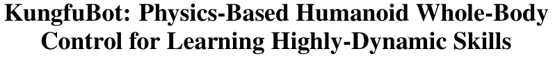
KungfuBot：面向高动态技能学习的基于物理的人形机器人全身控制
Weiji Xie* 1,2 Jinrui Han* 1,2 Jiakun Zheng* 1,3 Huanyu Li1,4 Xinzhe Liu1,5 Jiyuan Shi1 Weinan Zhang2 Chenjia Bai† 1 Xuelong Li† 1
核对原版排版
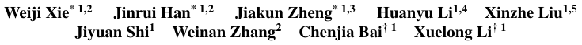
Weiji Xie* 1,2 Jinrui Han* 1,2 Jiakun Zheng* 1,3 Huanyu Li1,4 Xinzhe Liu1,5 Jiyuan Shi1 Weinan Zhang2 Chenjia Bai† 1 Xuelong Li† 1
1Institute of Artificial Intelligence (TeleAI), China Telecom
核对原版排版
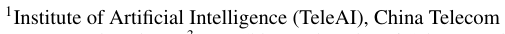
1Institute of Artificial Intelligence (TeleAI), China Telecom
2Shanghai Jiao Tong University 3East China University of Science and Technology 4Harbin Institute of Technology 5ShanghaiTech University
核对原版排版
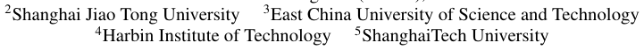
2Shanghai Jiao Tong University 3East China University of Science and Technology 4Harbin Institute of Technology 5ShanghaiTech University
Abstract
核对原版排版
摘要
Humanoid robots are promising to acquire various skills by imitating human behaviors. However, existing algorithms are only capable of tracking smooth, low-speed human motions, even with delicate reward and curriculum design. This paper presents a physics-based humanoid control framework, aiming to master highly-dynamic human behaviors such as Kungfu and dancing through multisteps motion processing and adaptive motion tracking. For motion processing, we design a pipeline to extract, filter out, correct, and retarget motions, while ensuring compliance with physical constraints to the maximum extent. For motion imitation, we formulate a bi-level optimization problem to dynamically adjust the tracking accuracy tolerance based on the current tracking error, creating an adaptive curriculum mechanism. We further construct an asymmetric actor-critic framework for policy training. In experiments, we train whole-body control policies to imitate a set of highly-dynamic motions. Our method achieves significantly lower tracking errors than existing approaches and is successfully deployed on the Unitree G1 robot, demonstrating stable and expressive behaviors. The project page is `https://kungfu-bot.github.io` .
核对原版排版
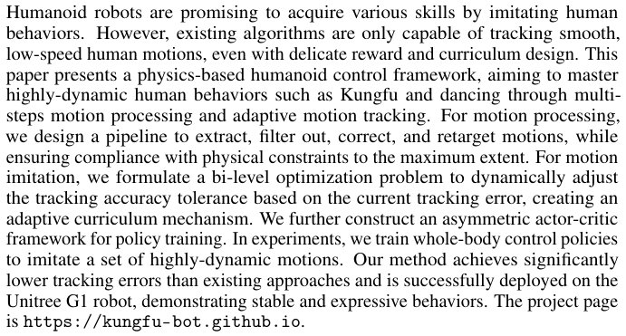
人形机器人有望通过模仿人类行为来掌握各种技能。然而，即便经过精心设计的奖励与课程学习，现有算法也仅能跟踪平滑、低速的人类动作。本文提出了一种基于物理的人形机器人控制框架，旨在通过多步骤动作处理和自适应动作跟踪，掌握诸如功夫和舞蹈等高动态人类行为。在动作处理方面，我们设计了一套流程来提取、滤除、校正并重定向动作，同时最大程度地确保其符合物理约束。在动作模仿方面，我们将问题形式化为一个双层优化问题，根据当前的跟踪误差动态调整跟踪精度容差，从而构建出自适应课程机制。我们还进一步构建了一个非对称 actor-critic 框架用于策略训练。在实验中，我们训练全身控制策略以模仿一系列高动态动作。与现有方法相比，我们的方法实现了显著更低的跟踪误差，并成功部署于 Unitree G1 机器人上，展现出稳定且富有表现力的行为。项目主页见 `https://kungfu-bot.github.io` 。
1 Introduction
核对原版排版
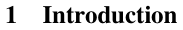
1 引言
Humanoid robots, with their human-like morphology, have the potential to mimic various human behaviors in performing different tasks [1]. The ongoing advancement of motion capture (MoCap) systems and motion generation methods has led to the creation of extensive motion datasets [2, 3], which encompass a multitude of human activities annotated with textual descriptions [4]. Consequently, it becomes promising for humanoid robots to learn whole-body control to imitate human behaviors. However, controlling high-dimensional robot actions to achieve ideal human-like performance presents a substantial challenge. One major difficulty arises from the fact that motion sequences captured from humans may not comply with the physical constraints of humanoid robots, including joint limits, dynamics, and kinematics [5, 6]. Hence, directly training policies through Reinforcement Learning (RL) to maximize rewards (e.g., the negative tracking error) often fails to yield desirable policies, as it may not exist within the solution space.
核对原版排版
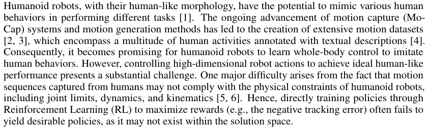
人形机器人凭借其类人形态，在执行不同任务时具备模仿各种人类行为的潜力 [1]。动作捕捉（MoCap）系统与动作生成方法的不断进步，催生了大规模动作数据集的建立 [2, 3]，这些数据集涵盖了大量附带文本描述标注的人类活动 [4]。因此，人形机器人通过学习全身控制来模仿人类行为变得大有前景。然而，控制高维机器人动作以实现理想的类人表现面临着巨大挑战。其中一个主要困难在于，从人类身上采集的动作序列可能并不符合人形机器人的物理约束，包括关节限位、动力学与运动学约束 [5, 6]。因此，直接通过强化学习（RL）训练策略以最大化奖励（例如负跟踪误差）往往无法产生令人满意的策略，因为在解空间中可能根本不存在可行的策略。
Recently, several RL-based whole-body control frameworks have been proposed to track motions [7, 8], which often take a reference kinematic motion as input and output the control actions for a humanoid robot to imitate it. To address physical feasibility issues, H2O and OmniH2O [9, 10] remove the infeasible motions using a trained privileged imitation policy, producing a clean motion
核对原版排版
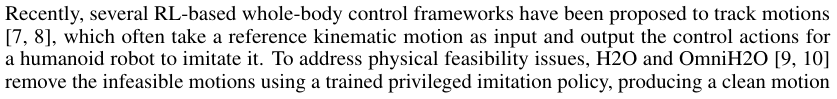
最近，有研究提出了几种基于 RL 的全身控制框架来跟踪动作 [7, 8]，这些框架通常以参考运动学动作为输入，并输出人形机器人模仿该动作所需的控制动作。为了解决物理可行性问题，H2O 和 OmniH2O [9, 10] 利用训练好的特权模仿策略剔除不可行的动作，从而生成一个干净的动作
*Equal contributions.
核对原版排版
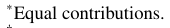
*同等贡献。
†Correspondence to: Chenjia Bai (baicj@chinatelecom.cn)
核对原版排版
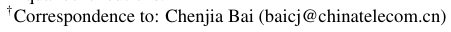
†通讯作者：Chenjia Bai (baicj@chinatelecom.cn)
展开第 1 页原版整页（含全部图表、公式与页眉页脚）
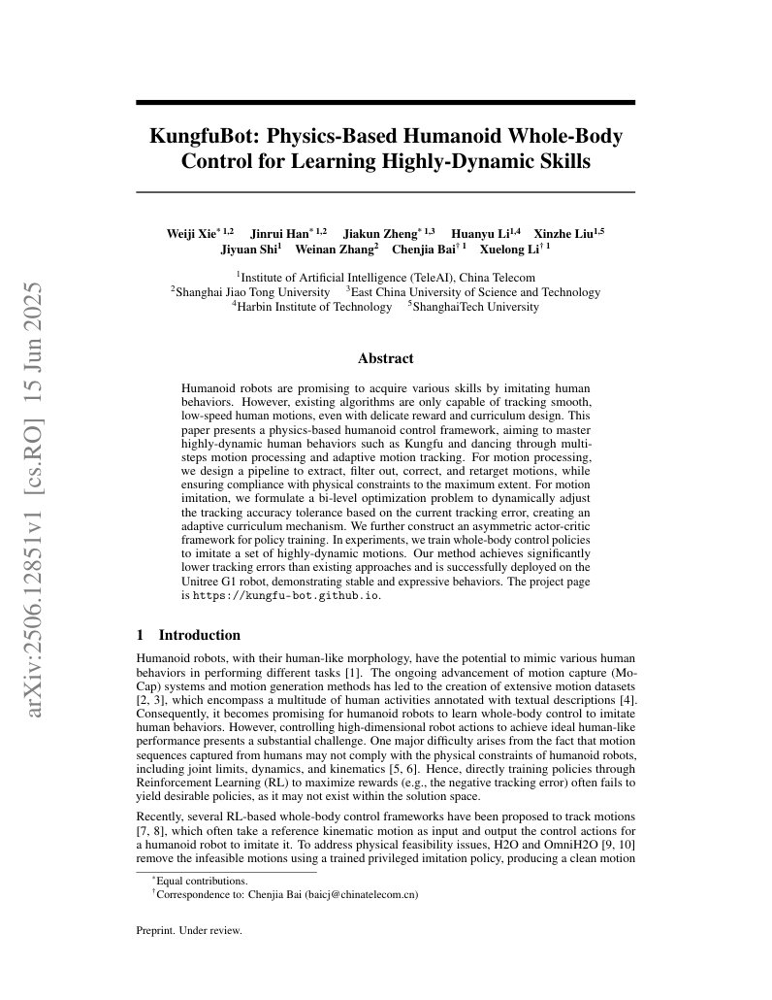
第 2 页Page 2PDF p.2
dataset. ExBody [7] constructs a feasible motion dataset by filtering via language labels, such as ‘wave’ and ‘walk’. Exbody2 [5] trains an initial policy on all motions and uses the tracking error to measure the difficulty of each motion. However, it would be costly to train the initial policy and find an optimal dataset. There is also a lack of suitable tolerance mechanisms for difficult-to-track motions in the training process. As a result, previous methods are only capable of tracking low-speed and smooth motions. Recently, ASAP [6] introduces a multi-stage mechanism and learned a residual policy to compensate for the sim-to-real gap, reducing the difficulties in tracking agile motions. However, ASAP involves a total of four training stages, and the training of residual policy requires MoCap systems to record real-robot states.
核对原版排版
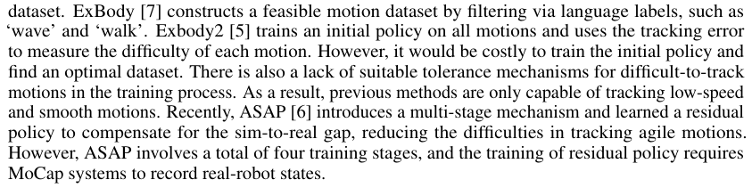
数据集。ExBody [7] 通过诸如“挥手”和“行走”等语言标签进行过滤，构建了可行的动作数据集。Exbody2 [5] 在所有动作上训练一个初始策略，并利用跟踪误差来衡量每个动作的难度。然而，训练初始策略以及寻找最优数据集的成本十分高昂。此外，在训练过程中也缺乏针对难以跟踪动作的合适容差机制。因此，以往的方法仅能跟踪低速且平滑的动作。最近，ASAP [6] 引入了一种多阶段机制，并学习了一个残差策略来弥补仿真到现实迁移（sim-to-real）差距，降低了跟踪敏捷动作的难度。然而，ASAP 总共包含四个训练阶段，且残差策略的训练需要借助 MoCap 系统来记录真实机器人的状态。
In this paper, we propose Physics-Based Humanoid motion Control (PBHC) , which utilizes a two-stage framework to tackle the challenges associated with agile and highly-dynamic motions. (i) In the motion processing stage, we first extract motions from videos and establish physics-based metrics to filter out human motions by estimating physical quantities within the human model, thereby eliminating motions beyond the physical limits. Then, we compute contact masks of motions followed by motion correction, and finally retarget processed motions to the robot using differential inverse kinematics. (ii) In the motion imitation stage, we propose an adaptive motion tracking mechanism that adjusts the tracking reward via a tracking factor. Perfectly tracking hard motions is impractical due to imperfect reference motions and the need of smooth control, so we adapt the tracking factor to different motions based on the tracking error. We then formulate a Bi-Level Optimization (BLO) [11] to derive the optimal factor and design an adaptive update rule that estimates the tracking error online to dynamically refine the factor during training.
核对原版排版
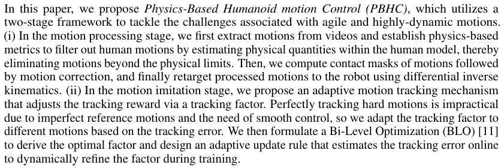
在本文中，我们提出了基于物理的人形机器人动作控制（Physics-Based Humanoid motion Control, PBHC），该方法利用两阶段框架来应对与敏捷和高动态动作相关的挑战。(i) 在动作处理阶段，我们首先从视频中提取动作，并通过估计人体模型中的物理量来建立基于物理的指标以过滤人类动作，从而剔除超出物理极限的动作。随后，我们计算动作的接触掩码并进行动作校正，最后利用差分逆运动学将处理后的动作重定向到机器人上。(ii) 在动作模仿阶段，我们提出了一种自适应动作跟踪机制，通过跟踪因子调节跟踪奖励。由于参考动作不够完美以及平滑控制的需求，完美跟踪困难动作是不切实际的，因此我们根据跟踪误差使跟踪因子自适应于不同的动作。随后，我们构建了一个双层优化（Bi-Level Optimization, BLO）问题 [11] 以推导最优因子，并设计了一种自适应更新规则，在线估计跟踪误差以在训练过程中动态精炼该因子。
Building on the two-stage framework, we design an asymmetric actor-critic architecture for policy optimization. The critic adopts a reward vectorization technique and leverages privileged information to improve value estimation, while the actor relies solely on local observations. In experiments, PBHC enables whole-body control policies to track highly-dynamic motions with lower tracking errors than existing methods. We further demonstrate successful real-world deployment on the Unitree G1 robot, achieving stable and expressive behaviors, including complex motions like Kungfu and dancing.
核对原版排版
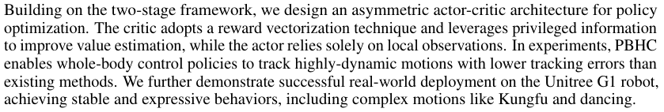
在两阶段框架的基础上，我们设计了一种非对称 actor-critic 架构用于策略优化。Critic 采用奖励向量化技术并利用特权信息来改进价值估计，而 Actor 则仅依赖局部观测。在实验中，PBHC 使全身控制策略能够以低于现有方法的跟踪误差来跟踪高动态动作。我们进一步展示了在 Unitree G1 机器人上的成功实机部署，实现了稳定且富有表现力的行为，包括功夫和舞蹈等复杂动作。
2 Preliminaries
核对原版排版
2 预备知识
Problem Formulation. We adopt the Unitree G1 robot [12] in our work, which has 23 degrees of freedom (DoFs) to control, excluding the 3 DoFs in each wrist of the hand. We formulate the motion imitation problem as a goal-conditional RL problem with Markov Decision Process M = ( S, A, Sref , γ, r, P ), where S and Sref are the state spaces of the humanoid robot and reference motion, respectively, A is the robot’s action space, r is a mixed reward function consisting motion-tracking and regularization rewards, and P is the transition function depending on the robot morphology and physical constraints. At each time step t , the policy π observes the proprioceptive state sprop t of the robot and generates action a t , with the aim of obtaining the next-state s t +1 that follows the corresponding reference state sref t +1in the reference trajectory [s 0ref, . . . ,sref N − 1].The action a t ∈ R23 is the target joint position for a PD controller to compute the motor torques. We adopt an off-the-shelf RL algorithm, PPO [13], for policy optimization with an actor-critic architecture.
核对原版排版
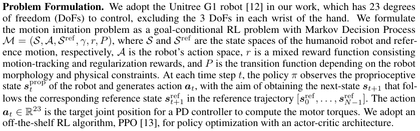
问题形式化。我们在工作中采用 Unitree G1 机器人 [12]，该机器人拥有 23 个受控自由度（DoF），不包括每只手腕部的 3 个自由度。我们将动作模仿问题形式化为目标条件 RL 问题，其马尔可夫决策过程为 M = ( S, A, Sref , γ, r, P )，其中 S 和 Sref 分别为人形机器人和参考动作的状态空间，A 是机器人的动作空间，r 是由动作跟踪奖励和正则化奖励组成的混合奖励函数，P 是取决于机器人形态和物理约束的状态转移函数。在每个时间步 t，策略 π 观测机器人的本体感知状态 sprop t 并生成动作 a t，旨在获得紧跟参考轨迹 [s 0ref, . . . ,sref N − 1] 中对应参考状态 sref t +1 的下一状态 s t +1。动作 a t ∈ R23 是用于 PD 控制器计算电机力矩的目标关节位置。我们采用现成的 RL 算法 PPO [13]，配合 actor-critic 架构进行策略优化。
Reference Motion Processing. For human motion processing, the Skinned Multi-Person Linear (SMPL) model [14] offers a general representation of human motions, using three key parameters: β ∈ R10 for body shapes, θ ∈ R24×3 for joint rotations in axis-angle representation, and ψ ∈ R3 for global translation. These parameters can be mapped to a 3D mesh consisting of 6,890 vertices via a differentiable skinning function M ( · ), which formally expressed as V = M ( β , θ , ψ ) ∈ R6890×3 . We employ a human motion recovery model to estimate SMPL parameters ( β , θ , ψ ) from videos, followed by additional motion processing. The resulting SMPL-format motions are then retargeted to G1 through an Inverse Kinematics (IK) method, yielding the reference motions for tracking purposes.
核对原版排版
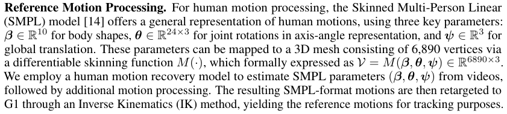
参考动作处理。对于人类动作处理，蒙皮多人线性（SMPL）模型 [14] 提供了人类动作的通用表征，采用三个关键参数：用于体型的 β ∈ R10、用于轴角表征下关节旋转的 θ ∈ R24×3 以及用于全局平移的 ψ ∈ R3。这些参数可通过可微蒙皮函数 M ( · ) 映射到包含 6,890 个顶点的 3D 网格，形式化表示为 V = M ( β , θ , ψ ) ∈ R6890×3。我们采用人体动作恢复模型从视频中估计 SMPL 参数 ( β , θ , ψ )，随后进行进一步的动作处理。接着，通过逆运动学（IK）方法将生成的 SMPL 格式动作重定向到 G1，从而获得用于跟踪的参考动作。
3 Methods
核对原版排版
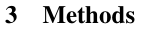
3 方法
An overview of PBHC is illustrated in Fig. 1. First, raw human videos are processed by a Human Motion Recovery (HMR) model to produce SMPL-format motion sequences. These sequences are filtered via physics-based metrics and corrected using contact masks. The refined motions are then retargeted to the G1 robot. Finally, each resulting trajectory serves as reference motion for training a separate RL policy, which is then deployed on the real G1 robot. In the following, we detail the motion processing pipeline (§3.1), adaptive motion tracking module (§3.2) and RL framework (§3.3).
核对原版排版
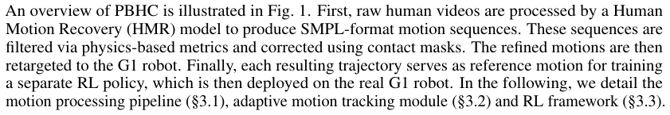
图 1 展示了 PBHC 的概览。首先，原始人类视频经由人体动作恢复（HMR）模型处理，生成 SMPL 格式的动作序列。这些序列通过基于物理的指标进行过滤，并使用接触掩码进行校正。精炼后的动作随后被重定向到 G1 机器人上。最终，生成的每条轨迹都作为参考动作，用于训练独立的 RL 策略，进而部署到真实的 G1 机器人上。下文将详细介绍动作处理流程（§3.1）、自适应动作跟踪模块（§3.2）和强化学习框架（§3.3）。
展开第 2 页原版整页（含全部图表、公式与页眉页脚）
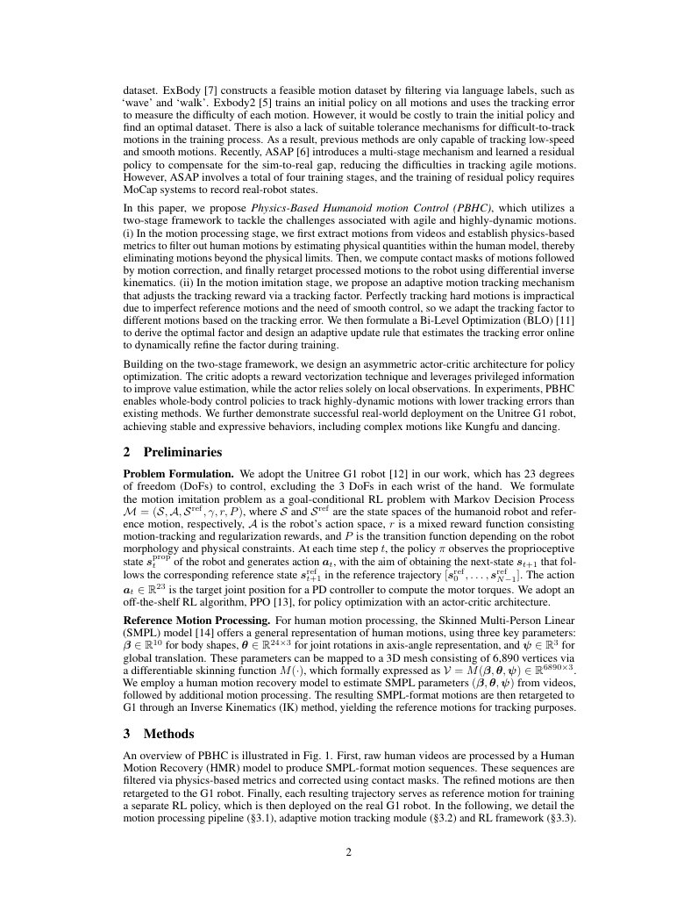
第 3 页Page 3PDF p.3
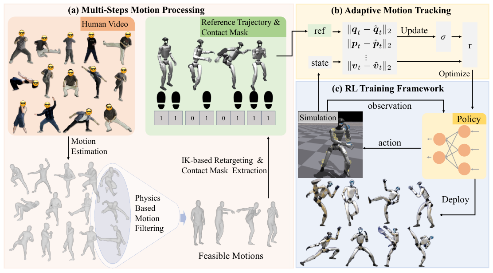
Figure 1: An overview of PBHC that includes three core components: (a) motion extraction from videos and multi-steps motion processing, (b) adaptive motion tracking based on the optimal tracking factor, (c) the RL training framework and sim-to-real deployment.
核对原版排版
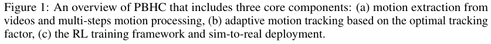
图 1：PBHC 概览，包含三个核心组件：(a) 从视频中提取动作及多步骤动作处理，(b) 基于最优跟踪因子的自适应动作跟踪，(c) 强化学习训练框架与仿真到现实迁移（sim-to-real）部署。
3.1 Motion Processing Pipeline
核对原版排版
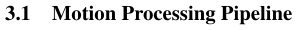
3.1 动作处理流程
We propose a motion processing pipeline to extract motion from videos for humanoid motion tracking, comprising four steps: (i) SMPL-format motion estimation from monocular videos, (ii) physics-based motion filtering, (iii) contact-aware motion correction, and (iv) motion retargeting. This pipeline ensures that physically plausible motions can be transferred from videos to humanoid robots.
核对原版排版
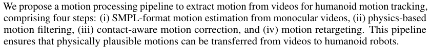
我们提出了一套动作处理流程，从视频中提取动作以用于人形机器人动作跟踪，包含四个步骤：(i) 基于单目视频的 SMPL 格式动作估计，(ii) 基于物理的动作过滤，(iii) 接触感知动作校正，以及 (iv) 动作重定向。该流程确保了物理上合理的动作能够从视频转移到人形机器人上。
Motion Estimation from Videos. We employ GVHMR [15] to estimate SMPL-format motions from monocular videos. GVHMR introduces a gravity-view coordinate system that naturally aligns motions with gravity, eliminating body tilt issues caused by reconstruction solely relying on the camera coordinate system. Furthermore, it mitigates foot sliding artifacts by predicting foot stationary probabilities, thereby enhancing motion quality.
核对原版排版
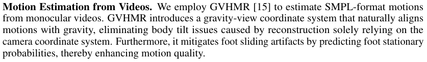
视频动作估计。我们采用 GVHMR [15] 从单目视频中估计 SMPL 格式的动作。GVHMR 引入了重力视角坐标系，使动作自然地与重力对齐，消除了仅依赖相机坐标系重建所引起的身体倾斜问题。此外，它通过预测足部静止概率来减轻足部滑动伪影，从而提升了动作质量。
Physics-based Motion Filtering. Due to reconstruction inaccuracies and out-of-distribution issues in HMR models, motions extracted from videos may violate physical and biomechanical constraints. Thus, we try to filter out these motions via physics-based principles. Previous work [16] suggests that proximity between the center of mass (CoM) and center of pressure (CoP) indicates greater stability, and proposes a method to estimate CoM and CoP coordinates from SMPL data. Building on this, we calculate the projected distance of CoM and CoP on the ground for each frame and apply a threshold to assess stability. Specifically, let p ¯CoM t = ( pCoM t,x, pCoM t,y)andp¯ tCoP = ( pCoP t,x, pCoP t,y)denote the projected coordinates of CoM and CoP on the ground at frame t respectively, and ∆ dt represents the distance between these projections. We define the stability criterion of a frame as
核对原版排版
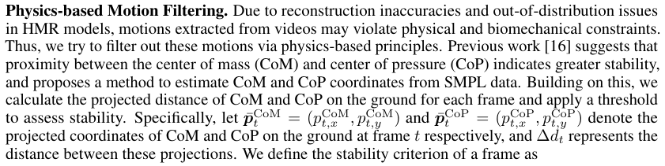
基于物理的动作过滤。由于 HMR 模型中的重建不精确以及分布外问题，从视频中提取的动作可能会违反物理和生物力学约束。因此，我们尝试通过基于物理的原则来滤除这些动作。以往的工作 [16] 表明，质心（CoM）与压力中心（CoP）之间的接近程度意味着更高的稳定性，并提出了一种从 SMPL 数据中估计 CoM 和 CoP 坐标的方法。在此基础上，我们计算每帧中 CoM 和 CoP 在地面上的投影距离，并应用阈值来评估稳定性。具体而言，分别令 p ¯CoM t = ( pCoM t,x, pCoM t,y) 和 p¯ tCoP = ( pCoP t,x, pCoP t,y) 表示在帧 t 时 CoM 和 CoP 在地面上的投影坐标，∆ dt 表示这些投影之间的距离。我们将某一帧的稳定性准则定义为
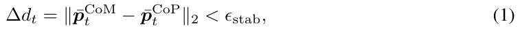
where ϵ stab represents the stability threshold. Then, given an N -frame motion sequence, let B = [ t 0 , t 1 , . . . , tK ] be the increasingly sorted list of frame indices that satisfy Eq. (1), where tk ∈ [1 , N ]. The motion sequence is considered stable if it satisfies two conditions: (i) Boundary-frame stability: 1 ∈B and N ∈B . (ii) Maximum instability gap: the maximum length of consecutive unstable frames must be less than threshold ϵ N, i.e., max k tk +1 − tk < ϵ N. Based on this criterion, motions that are clearly unable to maintain dynamic stability can be excluded from the original dataset.
核对原版排版
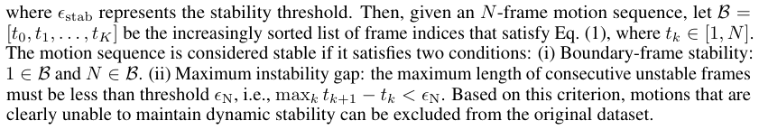
其中 ϵ stab 表示稳定性阈值。随后，给定一个 N 帧动作序列，令 B = [ t 0 , t 1 , . . . , tK ] 为满足式 (1) 的升序排列帧索引列表，其中 tk ∈ [1 , N ]。若动作序列满足以下两个条件，则被认为是稳定的：(i) 边界帧稳定性：1 ∈B 且 N ∈B。(ii) 最大不稳定间隙：连续不稳定帧的最大长度必须小于阈值 ϵ N，即 max k tk +1 − tk < ϵ N。根据这一准则，可以从原始数据集中排除明显无法保持动态稳定性的动作。
Motion Correction based on Contact Mask. To better capture foot-ground contact in motion data, we estimate contact masks by analyzing ankle displacement across consecutive frames, based on the zero-velocity assumption [17, 18]. Let pl t-ankle ∈ R3 denote the position of the left ankle joint at time t , and cleft t ∈{ 0 , 1 } the corresponding contact mask. The contact mask is estimated as
核对原版排版
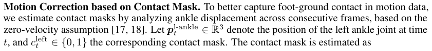
基于接触掩码的动作校正。为了在动作数据中更好地捕捉足部与地面的接触，我们基于零速度假设 [17, 18]，通过分析连续帧之间的脚踝位移来估计接触掩码。令 pl t-ankle ∈ R3 表示 t 时刻左踝关节的位置，cleft t ∈{ 0 , 1 } 表示对应的接触掩码。接触掩码估计为
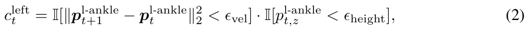
展开第 3 页原版整页（含全部图表、公式与页眉页脚）
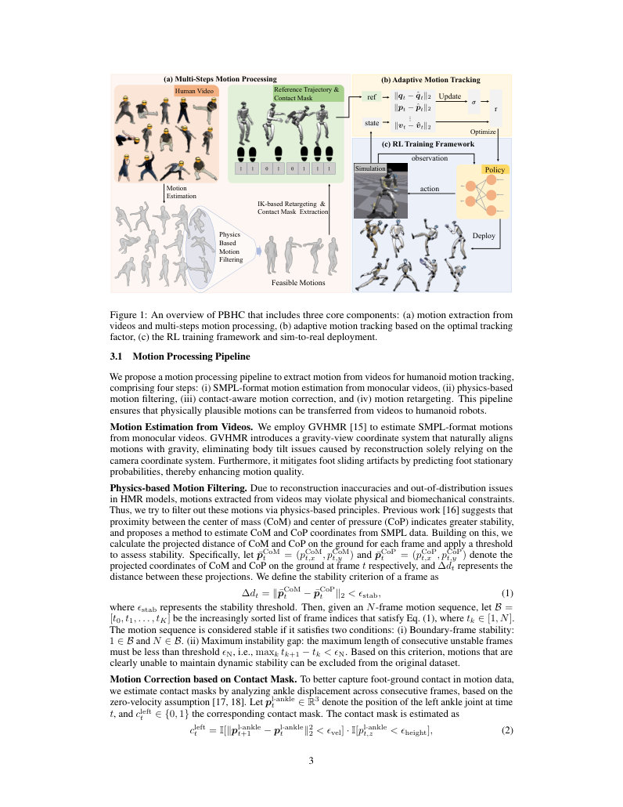
第 4 页Page 4PDF p.4
where ϵ vel and ϵ height are empirically chosen thresholds. Similarly for the right foot.
核对原版排版
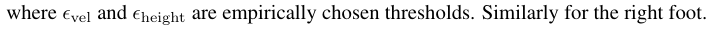
其中 ϵ vel 和 ϵ height 为经验选定的阈值。右脚同理。
To address minor floating artifacts not eliminated by threshold-based filtering, we apply a correction step based on the estimated contact mask. Specifically, if either foot is in contact at frame t , a vertical offset is applied to the global translation. Let ψ t denotes the global translation of the pose at time t , then the corrected vertical position is:
核对原版排版
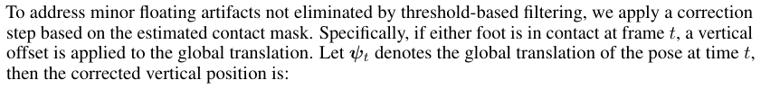
为了解决基于阈值的过滤未能消除的轻微悬空伪影，我们基于估计的接触掩码应用了一个校正步骤。具体而言，若在帧 t 时任一足部发生接触，则对全局平移施加一个垂直偏移。令 ψ t 表示姿态在时刻 t 的全局平移，则校正后的垂直位置为：
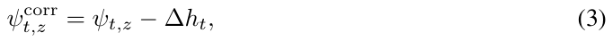
where ∆ ht = min v∈Vt pv t,zis the lowestz-coordinate among the SMPL mesh verticesVtat framet. While the correction alleviates floating artifacts, it may cause frame-to-frame jitter. We address this by applying Exponential Moving Average (EMA) to smooth the motion.
核对原版排版
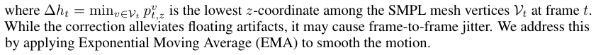
其中 ∆ ht = min v∈Vt pv t,z 是帧 t 下 SMPL 网格顶点 Vt 中最小的 z 坐标。虽然该校正缓解了悬空伪影，但可能会引起帧间抖动。我们通过应用指数移动平均（EMA）平滑动作来解决这一问题。
Motion Retargeting. We adopt an inverse kinematics (IK)-based method [19] to retarget processed SMPL-format motions to the G1 robot. This approach formulates a differentiable optimization problem that ensures end-effector trajectory alignment while respecting joint limits.
核对原版排版
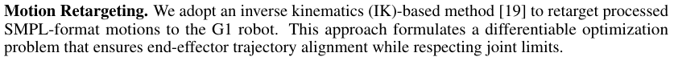
动作重定向。我们采用基于逆运动学（IK）的方法 [19] 将处理后的 SMPL 格式动作重定向到 G1 机器人。该方法构建了一个可微优化问题，在遵循关节限位的同时确保末端执行器轨迹对齐。
To enhance motion diversity, we incorporate additional data from open-source datasets, AMASS [4] and LAFAN [20]. These motions are partially processed through our pipeline, including contact mask estimation, motion correction, and retargeting.
核对原版排版
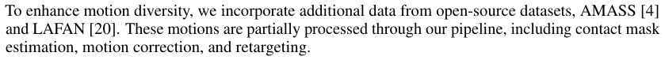
为了增强动作多样性，我们引入了来自开源数据集 AMASS [4] 和 LAFAN [20] 的额外数据。这些动作经过了我们流程的部分处理，包括接触掩码估计、动作校正和重定向。
3.2 Adaptive Motion Tracking
核对原版排版
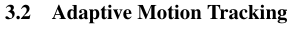
3.2 自适应动作跟踪
3.2.1 Exponential Form Tracking Reward
核对原版排版
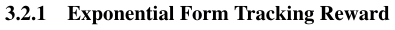
3.2.1 指数形式跟踪奖励
The reward function in PBHC, detailed in Appendix C.2, comprises two components: task-specific rewards, which enforce accurate tracking of reference motions, and regularization rewards, which promote overall stability and smoothness.
核对原版排版
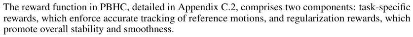
PBHC 中的奖励函数（详见附录 C.2）包含两个组成部分：任务特定奖励，用于促使对参考动作的准确跟踪；正则化奖励，用于促进整体的稳定性与平滑性。
The task-specific rewards include terms for aligning joint states, rigid body state, and foot contact mask. These rewards, except the foot contact tracking term, follow the exponential form as:
核对原版排版
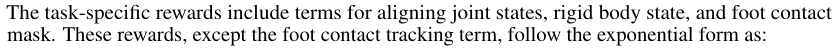
任务特定奖励包括用于对齐关节状态、刚体状态以及足部接触掩码的项。除足部接触跟踪项外，这些奖励均遵循如下指数形式：
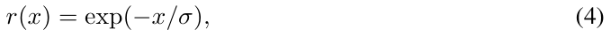
where x represents the tracking error, typically measured as the mean squared error (MSE) of quantities such as joint angles, while σ controls the tolerance of the error, referred to as the tracking factor . This exponential form is preferred over the negative error form because it is bounded, helps stabilize the training process, and provides a more intuitive approach for reward weighting.
核对原版排版
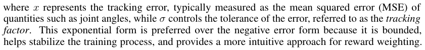
其中 x 表示跟踪误差，通常衡量为诸如关节角等物理量的均方误差（MSE），而 σ 控制对误差的容差，被称为跟踪因子。这种指数形式相较于负误差形式更受青睐，因为它是有界的，有助于稳定训练过程，并为奖励加权提供了一种更直观的方法。
Intuitively, when σ is much larger than the typical range of x , the reward remains close to 1 and becomes insensitive to changes in x , while an overly small σ causes the reward to approach 0 and also reduces its sensitivity, highlighting the importance of choosing σ appropriately to enhance responsiveness and hence tracking precision. This intuition is illustrated in Fig. 2.
核对原版排版
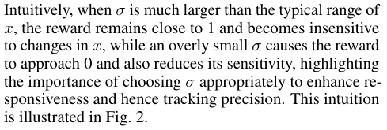
直观地说，当 σ 远大于 x 的典型取值范围时，奖励保持接近 1 且对 x 的变化变得不敏感；而过小的 σ 则会导致奖励接近 0 并同样降低其灵敏度，这凸显了合理选择 σ 以增强响应性从而提升跟踪精度的重要性。这一直观机理如图 2 所示。
3.2.2 Optimal Tracking Factor
核对原版排版
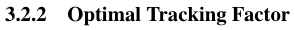
3.2.2 最优跟踪因子
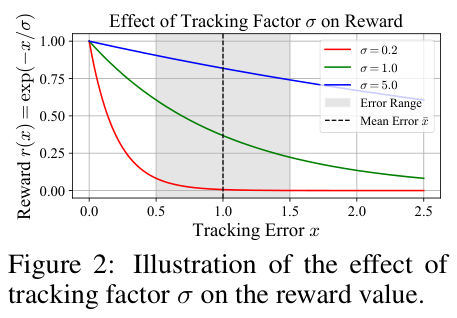
To determine the choice of the optimal tracking factor, we introduce a simplified model of motion tracking and formulate it as a bi-level optimization problem. The intuition behind this formulation is that the tracking factor σ should be chosen to minimize the accumulated tracking error of the converged policy over the reference trajectory . In manual tuning scenarios, this is typically achieved through an iterative process where an engineer selects a value for σ , trains a policy, observes the results, and repeats the process until satisfactory performance is attained.
核对原版排版
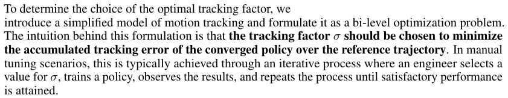
为了确定最优跟踪因子的选择，我们引入了一个简化的动作跟踪模型，并将其形式化为一个双层优化问题。该形式化背后的直观思想是：应当选取跟踪因子 σ，以使收敛策略在参考轨迹上的累积跟踪误差最小化。在人工调参场景中，这通常通过一个迭代过程来实现：工程师选择一个 σ 值，训练一个策略，观察结果，并重复该过程直至达到令人满意的性能。
Given a policy π , there is a sequence of expected tracking error x ∈ RN +forNsteps,wherexi represents the expected tracking error at the i -th step of the rollout episodes. Rather than optimizing the policy directly, we treat the tracking error sequence x as decision variables. This allows us to reformulate the optimization problem of motion tracking as:
核对原版排版
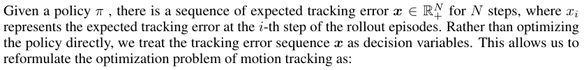
给定策略 π，存在一段对应 N 步的期望跟踪误差序列〔行内公式见原版〕，其中 xi 表示在 rollout episode 第 i 步的期望跟踪误差。我们并未直接优化策略，而是将跟踪误差序列 x 视为决策变量。这使我们能够将动作跟踪的优化问题重新表述为：
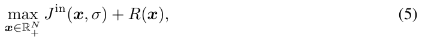
展开第 4 页原版整页（含全部图表、公式与页眉页脚）
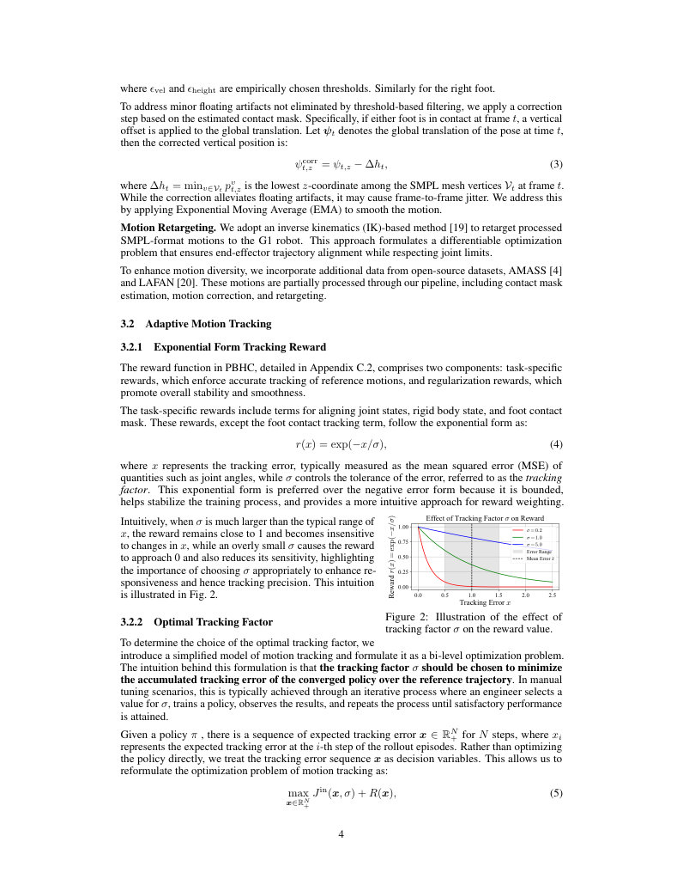
第 5 页Page 5PDF p.5
where the internal objective Jin ( x , σ ) =�N i =1exp(−xi/σ) is the simplified accumulated reward induced by the tracking reward in Eq. (4), and we introduce R ( x ) to capture all additional effects beyond Jin , including environment dynamics and other policy objectives such as extra rewards. The solution x∗ to Eq. (5) corresponds to the error sequence induced by the optimal policy π∗ . Subsequently, the optimization objective of σ is to maximize the obtained accumulated negative tracking error Jex ( x∗ ) =�N i =1−x i∗, theexternalobjective, formalized as the following bi-level optimization problem:
核对原版排版
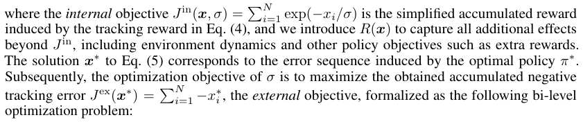
Under additional technical assumptions, we can solve Eq. (6) and derive that the optimal tracking factor is the average of the optimal tracking error, as detailed in Appendix A.
核对原版排版
在附加的技术假设下，我们可以求解 Eq. (6)，并推导出最优跟踪因子是最优跟踪误差的平均值，详见附录 A。
3.2.3 Adaptive Mechanism
核对原版排版
3.2.3 自适应机制
Figure 3: Closed-loop adjustment of tracking factor in the proposed adaptive mechanism.
核对原版排版
图 3：所提自适应机制中跟踪因子的闭环调节。
Figure 4: Example of the right hand y -position for ‘Horse-stance punch’. The adaptive σ can progressively improve the tracking precision. σ posvr is used for tracking the head and hands.
核对原版排版
图 4：“马步冲拳”（Horse-stance punch）的右手 y 轴位置示例。自适应 σ 能够逐步提高跟踪精度。σ posvr 用于跟踪头部和双手。
While Eq. (7) provides a theoretical guidance for determining the tracking factor, the coupling between σ∗ and x∗ creates a circular dependency that prevents direct computation. Additionally, due to the varying quality and complexity of reference motion data, selecting a single, fixed value for the tracking factor that works for all motion scenarios is impractical. To resolve this, we design an adaptive mechanism that dynamically adjusts σ during training through a feedback loop between error estimation and tracking factor adaptation.
核对原版排版
尽管 Eq. (7) 为确定跟踪因子提供了理论指导，但 σ∗ 与 x∗ 之间的耦合造成了循环依赖，导致无法直接计算。此外，由于参考动作数据的质量和复杂度各异，为所有动作场景选定一个通用的单一固定跟踪因子是不切实际的。为了解决这一问题，我们设计了一种自适应机制，通过误差估计与跟踪因子调整之间的反馈循环，在训练过程中动态调节 σ。
In this mechanism, we maintain an Exponential Moving Average (EMA) x ˆ of the instantaneous tracking error over environment steps. This EMA serves as an online estimate of the expected tracking error under the current policy, and during training this value should approach the average optimal tracking error i =1x i∗ /N under the current factor σ . At each step, PBHC updates σ to the �� N � current value of x ˆ, creating a feedback loop where reductions in tracking error lead to tightening of σ . This closed-loop process drives further policy refinement, and as the tracking error decreases, the system converges to an optimal value of σ that asymptotically solves Eq. (9), as illustrated in Fig. 3.
核对原版排版
在该机制中，我们维护环境步上瞬时跟踪误差的指数移动平均（EMA）x ˆ。该 EMA 作为当前策略下期望跟踪误差的在线估计；在训练过程中，该值应逼近当前因子 σ 下的平均最优跟踪误差〔行内公式见原版〕。在每一步中，PBHC 将 σ 更新为 x ˆ 的当前值，从而形成一个反馈循环，其中跟踪误差的减小会导致 σ 的收紧。这一闭环过程推动了策略的进一步优化，且随着跟踪误差的减小，系统会收敛到渐近求解 Eq. (9) 的最优 σ 值，如图 3 所示。
To ensure stability during training, we constrain σ to be non-increasing and initialize it with a relatively large value, σinit . The update rule is given by Eq. (8). As shown in Fig. 4, this adaptive mechanism allows the policy to progressively improve its tracking precision during training.
核对原版排版
为了确保训练过程中的稳定性，我们约束 σ 为非递增，并使用一个相对较大的值 σinit 对其进行初始化。更新规则如 Eq. (8) 所示。如图 4 所示，该自适应机制使策略能够在训练过程中逐步提高其跟踪精度。
3.3 RL Training Framework
核对原版排版
3.3 RL 训练框架
Asymmetric Actor-Critic. Following previous works [6, 21], the time phase variable ϕt ∈ [0 , 1] is introduced to represent the current progress of the reference motion linearly, where ϕt = 0 denotes the start of a motion and ϕt = 1 denotes the end. The observation of the actor sactor t = includes the robot’s proprioception sprop t and the time phase variable ϕt . The proprioception sprop t [ q t− 4: t, q ˙ t− 4: t, ω troot − 4: t,g tproj − 4: t,at−5:t−1]includes5-stephistoryofjointpositionqt∈R23,joint
核对原版排版
非对称 Actor-Critic。遵循以往的研究 [6, 21]，我们引入时间相位变量 ϕt ∈ [0 , 1] 来线性表示参考动作的当前进度，其中 ϕt = 0 表示动作的开始，ϕt = 1 表示动作的结束。Actor 的观测〔行内公式见原版〕包含机器人的本体感觉 sprop t 与时间相位变量 ϕt 。本体感觉 sprop t [ q t− 4: t, q ˙ t− 4: t, ω troot − 4: t,g tproj − 4: t,at−5:t−1] 包含关节位置 qt ∈ R23 的 5 步历史、关节
第 6 页Page 6PDF p.6
velocity q ˙ t ∈ R23 , root angular velocity ω troot ∈ R3 , root projected gravity g tproj ∈ R3 and last-step action a t− 1 ∈ R23 . The critic receives an augmented observation scrtic t , including sprop t , time phase, reference motion positions, root linear velocity, and a set of randomized physical parameters.
核对原版排版
速度 q ˙ t ∈ R23、根节点角速度 ω troot ∈ R3、根节点投影重力 g tproj ∈ R3 以及上一步动作 a t− 1 ∈ R23。Critic 接收一个增强观测 scrtic t，包括 sprop t、时间相位、参考动作位置、根节点线速度以及一组随机化的物理参数。
Reward Vectorization. To facilitate the learning of value function with multiple rewards, we vectorize rewards and value functions as: r = [ r 1 , . . . , rn ] and V ( s ) = [ V 1( s ) , . . . , Vn ( s )] following Xie et al. [22]. Rather than aggregating all rewards into a single scalar, each reward component ri is assigned to a value function Vi ( s ) that independently estimates returns, implemented by a critic network with multiple output heads. All value functions are aggregated to compute the action advantage. This design enables precise value estimation and promotes stable policy optimization.
核对原版排版
奖励向量化。为了便于学习具有多项奖励的价值函数，我们遵循 Xie 等人 [22] 的方法，将奖励和价值函数向量化为：r = [ r 1 , . . . , rn ] 与 V ( s ) = [ V 1( s ) , . . . , Vn ( s )]。我们并未将所有奖励聚合为一个单一标量，而是为每个奖励分量 ri 分配一个独立估计回报的价值函数 Vi ( s )，并通过具有多个输出头的 Critic 网络来实现。所有价值函数被聚合以计算动作优势。该设计实现了精确的价值估计，并促进了稳定的策略优化。
Reference State Initialization. We use Reference State Initialization (RSI) [21], which initializes the robot’s state from reference motion states at randomly sampled time phases. This facilitates parallel learning of different motion phases, significantly improving training efficiency.
核对原版排版
参考状态初始化。我们采用参考状态初始化（RSI）[21]，从随机采样的时间相位处的参考动作状态来初始化机器人的状态。这有利于对不同动作阶段进行并行学习，从而显著提高训练效率。
Sim-to-Real Transfer. To bridge the sim-to-real gap, we adopt domain randomization by varying the physical parameters of the simulated environment and humanoids. The trained policies are validated through sim-to-sim testing before being directly deployed to real robots, achieving zero-shot sim-to-real transfer without any fine-tuning. Details are in Appendix C.3.
核对原版排版
仿真到现实迁移。为了弥合仿真到现实的差距，我们通过改变仿真环境和人形机器人的物理参数来采用域随机化。训练好的策略在直接部署到真实机器人之前会通过 sim-to-sim 测试进行验证，从而无需任何微调即可实现零样本仿真到现实迁移。详情见附录 C.3。
4 Related Works
核对原版排版
4 相关工作
Humanoid Motion Imitation. Robot motion imitation aims to learn lifelike and natural behaviors from human motions [21, 23]. Although there exist several motion datasets that contain diverse motions [24, 25, 4], humanoid robots cannot directly learn the diverse behaviors due to the significantly different physical structures between humans and humanoid robots [6, 26]. Meanwhile, most datasets lack physical information, such as foot contact annotations that would be important for robot policy learning [27, 28]. As a result, we adopt physics-based motion processing for motion filtering and contact annotation. After obtaining the reference motion, the humanoid robot learns a whole-body control policy to interact with the simulator [29, 30], with the aim of obtaining a state trajectory close to the reference [31, 32]. However, learning such a policy is quite challenging, as the robot requires precise control of high-dimensional DoFs to achieve stable and realistic movement [7, 8]. Recent advances adopt physics-based motion filtering and RL to learn whole-body control policies [5, 10], and perform real-world adaptation via sim-to-real transfer [33]. However, because of the lack of tolerance mechanisms for hard motions, these methods are only capable of tracking relatively simple motions. Other works also combine teleoperation [34, 35] and independent control of upper and lower bodies [36], while they may sacrifice the expressiveness of motions. In contrast, we propose an adaptive mechanism to dynamically adapt the tracking rewards for agile motions.
核对原版排版
人形机器人动作模仿。机器人动作模仿旨在从人类动作中学习逼真且自然的行为 [21, 23]。尽管存在若干包含多样化动作的动作数据集 [24, 25, 4]，但由于人类与人形机器人之间存在显著不同的物理结构，人形机器人无法直接学习这些多样化行为 [6, 26]。同时，大多数数据集缺乏物理信息，例如对机器人策略学习至关重要的足底接触标注 [27, 28]。因此，我们采用基于物理的动作处理来进行动作过滤和接触标注。在获取参考动作后，人形机器人学习全身控制策略以与仿真器交互 [29, 30]，其目标是获得接近参考轨迹的状态轨迹 [31, 32]。然而，学习此类策略极具挑战性，因为机器人需要对高维自由度（DoF）进行精确控制，以实现稳定且逼真的运动 [7, 8]。近期的研究进展采用基于物理的动作过滤和强化学习（RL）来学习全身控制策略 [5, 10]，并通过仿真到现实迁移进行现实世界适配 [33]。然而，由于对高难度动作缺乏容差机制，这些方法仅能跟踪相对简单的动作。其他工作还结合了遥操作 [34, 35] 以及对上下半身的独立控制 [36]，但这可能会牺牲动作的表现力。相比之下，我们提出了一种自适应机制，为高敏捷度动作动态调节跟踪奖励。
Humanoid Whole-Body Control. Traditional methods for humanoid robots usually learn independent control policies for locomotion and manipulation. For the lower-body, RL-based controller have been widely adopted to learn locomotion policies for complex tasks such as complex-terrain walking [37, 38], gait control [39], standing up [40, 41], jumping [42], and even parkour [43, 44]. However, each locomotion task requires delicate reward designs, and human-like behaviors are difficult to obtain [45, 46]. In contrast, we adopt human motion as references, which is straightforward for robots to obtain human-like behaviors. For the upper-body, various methods propose different architectures to learn manipulation tasks, such as diffusion policy [47, 48], visual-language-action model [49, 50, 51], dual-system architecture [52, 53], and world models [54, 55]. However, these methods may overlook the coordination of the two limbs. Recently, several whole-body control methods have been proposed, with the aim of enhancing the robustness of entire systems in locomotion [22, 39, 34] or performing loco-manipulation tasks [56]. Differently, the upper and lower bodies of our method have the same objective to track the reference motion, while the lower body still requires maintaining stability and preventing falling in motion imitation. Other methods collect whole-body control datasets to learn a humanoid foundation model [56, 57], while requiring a large number of trajectories. In contrast, we only require a small number of reference motions to learn diverse behaviors.
核对原版排版
人形机器人全身控制。针对人形机器人的传统方法通常为移动（locomotion）和操作（manipulation）分别学习独立的控制策略。对于下半身，基于强化学习的控制器已被广泛用于学习复杂任务的移动策略，例如复杂地形行走 [37, 38]、步态控制 [39]、起立 [40, 41]、跳跃 [42]，甚至是跑酷 [43, 44]。然而，每个移动任务都需要精细的奖励设计，且类人行为难以获得 [45, 46]。相比之下，我们采用人类动作作为参考，使机器人能够直接获得类人行为。对于上半身，各类方法提出了不同的架构来学习操作任务，例如扩散策略 [47, 48]、视觉-语言-动作模型 [49, 50, 51]、双系统架构 [52, 53] 以及世界模型 [54, 55]。然而，这些方法可能会忽视上下肢之间的协同。最近，有研究提出了几种全身控制方法，旨在增强整个系统在移动中的鲁棒性 [22, 39, 34] 或执行移动-操作（loco-manipulation）任务 [56]。与之不同的是，在我们的方法中，上半身和下半身具有跟踪参考动作的相同目标，同时在动作模仿中下半身仍需保持稳定性并防止跌倒。其他方法通过收集全身控制数据集来学习人形机器人基座模型 [56, 57]，但需要大量的轨迹。相比之下，我们仅需少量的参考动作即可学习多样化的行为。
5 Experiments
核对原版排版
5 实验
In this section, we present experiments to evaluate the effectiveness of PBHC. Our experiments aim to answer the following key research questions:
核对原版排版
在本节中，我们通过实验评估 PBHC 的有效性。我们的实验旨在回答以下关键研究问题：
第 7 页Page 7PDF p.7
Figure 5: Example motions in our constructed dataset. Darker opacity indicates later timestamps.
核对原版排版
图 5：在我们构建的数据集中的动作示例。颜色越深表示时间戳越靠后。
- Q1. Can our physics-based motion filtering effectively filter out untrackable motions?
核对原版排版
- Q1. 我们基于物理的动作过滤能否有效滤除无法跟踪的动作？
- Q2. Does PBHC achieve superior tracking performance compared to prior methods in simulation?
核对原版排版
- Q2. 在仿真中，与以往方法相比，PBHC 是否取得了更优越的跟踪性能？
- Q3. Does the adaptive motion tracking mechanism improve tracking precision?
核对原版排版
- Q3. 自适应动作跟踪机制是否提高了跟踪精度？
- Q4. How well does PBHC perform in real-world deployment?
核对原版排版
- Q4. PBHC 在真实世界部署中的表现如何？
5.1 Experiment Setup
核对原版排版
5.1 实验设置
Evaluation Method. We assess the policy’s tracking performance using a highly-dynamic motion dataset constructed through our proposed motion processing pipeline, detailed in Appendix B. Examples are shown in Fig. 5. We categorize motions into three difficulty levels: easy, medium, and hard, based on their agility requirements. For each setting, policies are trained in IsaacGym [29] with three random seeds and are evaluated over 1,000 rollout episodes.
核对原版排版
评估方法。我们使用通过所提出的动作处理流程构建的高动态动作数据集来评估策略的跟踪性能，详见附录 B。示例见图 5。我们根据敏捷度要求将动作划分为三个难度等级：简单（easy）、中等（medium）和困难（hard）。对于每种设置，策略均在 IsaacGym [29] 中使用三个随机种子进行训练，并在 1,000 个 rollout episode 上进行评估。
Metrics. The tracking performance of polices is quantified through the following metrics: Global Mean Per Body Position Error ( E g-mpbpe, mm), root-relative Mean Per Body Position Error ( E mpbpe, mm), Mean Per Joint Position Error ( E mpjpe, 10−3 rad), Mean Per Joint Velocity Error ( E mpjve, 10−3 rad/frame), Mean Per Body Velocity Error ( E mpbve, mm/frame), and Mean Per Body Acceleration Error ( E mpbae, mm/frame2 ). The definition of metrics is given in Appendix D.2.
核对原版排版
评估指标。策略的跟踪性能通过以下指标进行量化：全局平均每刚体位置误差（E g-mpbpe, mm）、根节点相对平均每刚体位置误差（E mpbpe, mm）、平均每关节位置误差（E mpjpe, 10−3 rad）、平均每关节速度误差（E mpjve, 10−3 rad/frame）、平均每刚体速度误差（E mpbve, mm/frame）以及平均每刚体加速度误差（E mpbae, mm/frame2 ）。各指标的定义见附录 D.2。
5.2 Motion Filtering
核对原版排版
5.2 动作过滤
To address Q1 , we apply our physics-based motion filtering method (see §3.1) to 10 motion sequences. Among them, 4 sequences are rejected based on the filtering criteria, while the remaining 6 are accepted. To evaluate the effectiveness of the filtering, we train a separate policy for each motion and compute the Episode Length Ratio (ELR), defined as the ratio of average episode length to reference motion length.
核对原版排版
为了回答 Q1，我们将基于物理的动作过滤方法（见 §3.1）应用于 10 个动作序列。其中，根据过滤准则剔除了 4 个序列，保留了其余 6 个序列。为了评估过滤的有效性，我们为每个动作分别训练了一个策略，并计算回合长度比（Episode Length Ratio, ELR），其定义为平均 episode 长度与参考动作长度之比。
As shown in Fig. 6, accepted motions consistently achieve high ELRs, demonstrating motions that satisfy the physics-based metric can lead to better performance in motion tracking. In contrast, rejected motions achieve a maximum ELR of only 54%, suggesting frequent violations of termination conditions. These results demonstrate that our filtering method effectively excludes inherently untrackable motions, thereby improving efficiency by focusing on viable candidates.
核对原版排版
如图 6 所示，被接受的动作始终取得较高的 ELR，这表明满足基于物理指标的动作能够在动作跟踪中取得更好的性能。相反，被拒绝的动作最高 ELR 仅为 54%，表明其频繁触发终止条件。这些结果证明，我们的过滤方法能够有效排除本质上不可跟踪的动作，从而通过聚焦于可行的候选动作来提高效率。
5.3 Main Result
核对原版排版
5.3 主要结果
Figure 6: The distribution of ELR of accepted and rejected motions.
核对原版排版
图 6：被接受与被拒绝动作的 ELR 分布。
To address Q2 , we compare PBHC with three baseline methods: OmniH2O [10], Exbody2 [5], and MaskedMimic [23]. All baselines employ the exponential form of the reward function for tracking reference motion, as described in §3.2.1. Implementation details are provided in Appendix D.3.
核对原版排版
为了回答 Q2，我们将 PBHC 与三种基线方法进行了比较：OmniH2O [10]、Exbody2 [5] 和 MaskedMimic [23]。如 §3.2.1 所述，所有基线方法均采用指数形式的奖励函数来跟踪参考动作。实现细节见附录 D.3。
As shown in Table 1, PBHC consistently outperforms the baselines OmniH2O and ExBody2 across all evaluation metrics. These improvements can be attributed to our adaptive motion tracking mechanism, which automatically adjusts tracking factors based on motion characteristics, whereas the fixed, empirically tuned parameters in the baselines fail to generalize across diverse motions. While
核对原版排版
如表 1 所示，在所有评估指标上，PBHC 均持续优于基线方法 OmniH2O 和 ExBody2。这些提升可归因于我们的自适应动作跟踪机制，该机制能够根据动作特征自动调节跟踪因子，而基线方法中固定的、经经验调优的参数则无法泛化到多样化的动作中。虽然
第 8 页Page 8PDF p.8
Table 1: Main results comparing different methods across difficulty levels. PBHC consistently outperforms deployable baselines and approaches oracle-level performance. Results are reported as mean ± one standard deviation. Bold indicates methods within one standard deviation of the best result, excluding MaskedMimic.
核对原版排版
表 1：跨不同难度等级对比不同方法的主要结果。PBHC 始终优于可部署的基线方法，并接近 oracle 级别的性能。结果以均值 ± 一个标准差的形式报告。粗体表示处于最佳结果一个标准差以内的方法（MaskedMimic 除外）。
Figure 7: Ablation study comparing the adaptive motion tracking mechanism with fixed tracking factor variants. The adaptive mechanism consistently achieves near-optimal performance across all motions, whereas fixed variants exhibit varying performance depending on motions.
核对原版排版
图 7：对比自适应动作跟踪机制与固定跟踪因子变体的消融实验。自适应机制在所有动作上始终取得接近最优的性能，而固定变体则随动作不同表现出起伏不定的性能。
MaskedMimic performs well on certain metrics, it is primarily designed for character animation and is not deployable for robot control, as it does not account for constraints such as partial observability and action smoothness. Therefore, we treat it as an oracle-style lower bound rather than a directly comparable baseline.
核对原版排版
MaskedMimic 在某些指标上表现优异，但它主要是为角色动画设计的，无法部署于机器人控制，因为它没有考虑部分可观测性和动作平滑性等约束条件。因此，我们将其视为 oracle 式的性能下界，而非可直接对比的基线方法。
5.4 Impact of Adaptive Motion Tracking Mechanism
核对原版排版
5.4 自适应动作跟踪机制的影响
To investigate Q3 , we conduct an ablation study evaluating our adaptive motion tracking mechanism (§3.2) against four baseline configurations with fixed tracking factor set: Coarse, Medium, UpperBound, LowerBound . The tracking factors in Coarse , Medium , UpperBound , and LowerBound are roughly progressively smaller, with LowerBound approximately corresponding to the smallest tracking factor derived from the adaptive mechanism after training convergence, while UpperBound approximately corresponds to the largest. The specific configuration of baselines and the converged tracking factors of the adaptive mechanism are given in Appendix D.4.
核对原版排版
为了探究 Q3，我们进行了一项消融实验，将我们的自适应动作跟踪机制（§3.2）与设定了固定跟踪因子的四种基线配置进行对比评估：Coarse、Medium、UpperBound、LowerBound。Coarse、Medium、UpperBound 和 LowerBound 中的跟踪因子大致呈逐步递减趋势，其中 LowerBound 大致对应于训练收敛后由自适应机制推导出的最小跟踪因子，而 UpperBound 则大致对应于最大跟踪因子。各基线的具体配置以及自适应机制收敛得到的跟踪因子见附录 D.4。
As shown in Fig. 7, the performance of the fixed tracking factor configurations ( Coarse, Medium, LowerBound and UpperBound ) varies between different motion types. Specifically, while LowerBound and UpperBound achieve strong performance on certain motions, they perform suboptimally on others, indicating that no single fixed setting consistently yields optimal tracking results on all motions. In contrast, our adaptive motion tracking mechanism consistently achieves near-optimal performance across all motion types, demonstrating its effectiveness in dynamically adjusting the tracking factor to suit varying motion characteristics.
核对原版排版
如图 7 所示，固定跟踪因子配置（Coarse、Medium、LowerBound 和 UpperBound）的性能在不同动作类型之间存在差异。具体而言，虽然 LowerBound 和 UpperBound 在某些动作上表现优异，但在其他动作上表现欠佳，这表明没有任何单一的固定设置能够在所有动作上始终取得最优的跟踪结果。相比之下，我们的自适应动作跟踪机制在所有动作类型中均始终取得接近最优的性能，证明了其动态调整跟踪因子以适应不同动作特性的有效性。
第 9 页Page 9PDF p.9
Figure 8: Our robot masters highly-dynamic skills in the real world. Time flows left to right.
核对原版排版
图 8：我们的机器人在现实世界中掌握了高动态技能。时间流向为从左至右。
5.5 Real-World Deployment
核对原版排版
5.5 现实世界部署
As shown in Fig. 8, 11 and the supporting videos, our robot in real world demonstrates outstanding dynamic capabilities through a diverse repertoire of advanced skills: (1) sophisticated martial arts techniques including powerful boxing combinations (jabs, hooks, and horse-stance punches) and highdegree kicking maneuvers (front kicks, jump kicks, side kicks, back kicks, and spinning roundhouse kicks); (2) acrobatic movements such as full 360-degree spins; (3) flexible motions including deep squats and stretches; (4) artistic performances ranging from dynamic dance routines to graceful Tai Chi sequences. This comprehensive skill set highlights our system’s remarkable versatility, dynamic control, and real-world applicability across both athletic and artistic domains.
核对原版排版
如图 8、图 11 以及补充视频所示，我们的机器人在现实世界中通过丰富多样的高级技能展示了出色的动态运动能力：（1）高水平武术技巧，包括强劲的拳击组合（刺拳、平勾拳和马步冲拳）以及高难度踢腿动作（前踢、跳踢、侧踢、后踢和旋风踢）；（2）杂技动作，例如 360 度旋转；（3）高柔韧性动作，包括深蹲和拉伸；（4）艺术表演，涵盖充满活力的舞蹈套路以及优雅流畅的太极拳序列。这一全面的技能体系凸显了我们的系统在体育运动与艺术表演领域所具备的非凡通用性、动态控制能力以及现实世界适用性。
To quantitatively assess our policy’s tracking performance, we conduct 10 trials of the Tai Chi motion and compute evaluation metrics based on the onboard sensor readings, as shown in Table 2. Notably, the metrics obtained in the real world are closely aligned with those from the sim-to-sim platform MuJoCo, demonstrating that our policy can robustly transfer from simulation to real-world deployment while maintaining high-performance control.
核对原版排版
为了定量评估我们策略的跟踪性能，我们对太极拳动作进行了 10 次试验，并基于机载传感器读数计算了评估指标，如表 2 所示。值得注意的是，在现实世界中获得的指标与仿真到仿真（sim-to-sim）平台 MuJoCo 的指标高度吻合，这表明我们的策略能够在保持高性能控制的同时，稳健地从仿真迁移到现实世界部署。
Table 2: Comparison of tracking performance of Tai Chi between real-world and simulation. The robot root is fixed to the origin since it’s inaccessible in real-world.
核对原版排版
表 2：现实世界与仿真中太极拳跟踪性能的对比。由于在现实世界中无法直接获取机器人根节点（root）状态，因此将其固定在原点。
6 Conclusion & Limitations
核对原版排版
6 结论与局限性
This paper introduces PBHC, a novel RL framework for humanoid whole-body motion control that achieves outstanding highly-dynamic behaviors and superior tracking accuracy through physics-based motion processing and adaptive motion tracking. The experiments show the motion filtering metric can efficiently filter out trajectories that are difficult to track, and the adaptive motion tracking method consistently outperforms baseline methods on tracking error. The real-world deployments demonstrate
核对原版排版
本文提出了 PBHC，一种用于人形机器人全身运动控制的新型强化学习框架，该框架通过基于物理的动作处理和自适应动作跟踪，实现了卓越的高动态行为以及优异的跟踪精度。实验表明，动作滤波指标能够高效滤除难以跟踪的轨迹，且自适应动作跟踪方法在跟踪误差上始终优于基线方法。现实世界部署展示了
第 10 页Page 10PDF p.10
robust behaviors for athletic and artistic domains. These contributions push the boundaries of humanoid motion control, paving the way for more agile and stable real-world applications.
核对原版排版
在体育运动与艺术表演领域的稳健运动表现。这些贡献拓展了人形机器人运动控制的技术边界，为实现更敏捷、更稳定的现实世界应用铺平了道路。
However, our method still has limitations. (i) It lacks environment awareness, such as terrain perception and obstacle avoidance, which restricts deployment in unstructured real-world settings. (ii) Each policy is trained to imitate a single motion, which may not be efficient for applications requiring diverse motion repertoires. We leave research on how to maintain high dynamic performance while enabling broader skill generalization for the future.
核对原版排版
然而，我们的方法仍存在局限性：（i）缺乏环境感知能力（如地形感知与避障），这限制了其在非结构化现实环境中的部署；（ii）每个策略仅针对模仿单一动作进行训练，对于需要多样化动作库的应用而言效率较低。我们将在未来研究如何在保持高动态性能的同时实现更广泛的技能泛化。
Acknowledgments and Disclosure of Funding
核对原版排版
致谢与资助声明
This work is supported by the National Natural Science Foundation of China (Grant No.62306242), the Young Elite Scientists Sponsorship Program by CAST (Grant No. 2024QNRC001), and the Yangfan Project of the Shanghai (Grant No.23YF11462200).
核对原版排版
本项工作得到了中国国家自然科学基金（资助号：62306242）、中国科协青年人才托举工程（CAST，资助号：2024QNRC001）以及上海市“扬帆计划”（资助号：23YF11462200）的资助。
References
核对原版排版
References
- [1] Zhaoyuan Gu, Junheng Li, Wenlan Shen, Wenhao Yu, Zhaoming Xie, Stephen McCrory, Xianyi Cheng, Abdulaziz Shamsah, Robert Griffin, C Karen Liu, et al. Humanoid locomotion and manipulation: Current progress and challenges in control, planning, and learning. arXiv preprint arXiv:2501.02116 , 2025.
核对原版排版
- [1] Zhaoyuan Gu, Junheng Li, Wenlan Shen, Wenhao Yu, Zhaoming Xie, Stephen McCrory, Xianyi Cheng, Abdulaziz Shamsah, Robert Griffin, C Karen Liu, et al. Humanoid locomotion and manipulation: Current progress and challenges in control, planning, and learning. arXiv preprint arXiv:2501.02116 , 2025.
- [2] Biao Jiang, Xin Chen, Wen Liu, Jingyi Yu, Gang Yu, and Tao Chen. Motiongpt: Human motion as a foreign language. Advances in Neural Information Processing Systems , 36:20067–20079, 2023.
核对原版排版
- [2] Biao Jiang, Xin Chen, Wen Liu, Jingyi Yu, Gang Yu, and Tao Chen. Motiongpt: Human motion as a foreign language. Advances in Neural Information Processing Systems , 36:20067–20079, 2023.
- [3] Zan Wang, Yixin Chen, Baoxiong Jia, Puhao Li, Jinlu Zhang, Jingze Zhang, Tengyu Liu, Yixin Zhu, Wei Liang, and Siyuan Huang. Move as you say interact as you can: Language-guided human motion generation with scene affordance. In IEEE/CVF Conference on Computer Vision and Pattern Recognition , pages 433–444, 2024.
核对原版排版
- [3] Zan Wang, Yixin Chen, Baoxiong Jia, Puhao Li, Jinlu Zhang, Jingze Zhang, Tengyu Liu, Yixin Zhu, Wei Liang, and Siyuan Huang. Move as you say interact as you can: Language-guided human motion generation with scene affordance. In IEEE/CVF Conference on Computer Vision and Pattern Recognition , pages 433–444, 2024.
- [4] Naureen Mahmood, Nima Ghorbani, Nikolaus F Troje, Gerard Pons-Moll, and Michael J Black. Amass: Archive of motion capture as surface shapes. In Proceedings of the IEEE/CVF international conference on computer vision , pages 5442–5451, 2019.
核对原版排版
- [4] Naureen Mahmood, Nima Ghorbani, Nikolaus F Troje, Gerard Pons-Moll, and Michael J Black. Amass: Archive of motion capture as surface shapes. In Proceedings of the IEEE/CVF international conference on computer vision , pages 5442–5451, 2019.
- [5] Mazeyu Ji, Xuanbin Peng, Fangchen Liu, Jialong Li, Ge Yang, Xuxin Cheng, and Xiaolong Wang. Exbody2: Advanced expressive humanoid whole-body control. arXiv preprint arXiv:2412.13196 , 2024.
核对原版排版
- [5] Mazeyu Ji, Xuanbin Peng, Fangchen Liu, Jialong Li, Ge Yang, Xuxin Cheng, and Xiaolong Wang. Exbody2: Advanced expressive humanoid whole-body control. arXiv preprint arXiv:2412.13196 , 2024.
- [6] Tairan He, Jiawei Gao, Wenli Xiao, Yuanhang Zhang, Zi Wang, Jiashun Wang, Zhengyi Luo, Guanqi He, Nikhil Sobanbab, Chaoyi Pan, et al. Asap: Aligning simulation and real-world physics for learning agile humanoid whole-body skills. arXiv preprint arXiv:2502.01143 , 2025.
核对原版排版
- [6] Tairan He, Jiawei Gao, Wenli Xiao, Yuanhang Zhang, Zi Wang, Jiashun Wang, Zhengyi Luo, Guanqi He, Nikhil Sobanbab, Chaoyi Pan, et al. Asap: Aligning simulation and real-world physics for learning agile humanoid whole-body skills. arXiv preprint arXiv:2502.01143 , 2025.
- [7] Xuxin Cheng, Yandong Ji, Junming Chen, Ruihan Yang, Ge Yang, and Xiaolong Wang. Expressive whole-body control for humanoid robots. In Robotics: Science and Systems , 2024.
核对原版排版
- [7] Xuxin Cheng, Yandong Ji, Junming Chen, Ruihan Yang, Ge Yang, and Xiaolong Wang. Expressive whole-body control for humanoid robots. In Robotics: Science and Systems , 2024.
- [8] Zipeng Fu, Qingqing Zhao, Qi Wu, Gordon Wetzstein, and Chelsea Finn. Humanplus: Humanoid shadowing and imitation from humans. In 8th Annual Conference on Robot Learning , 2024.
核对原版排版
- [8] Zipeng Fu, Qingqing Zhao, Qi Wu, Gordon Wetzstein, and Chelsea Finn. Humanplus: Humanoid shadowing and imitation from humans. In 8th Annual Conference on Robot Learning , 2024.
- [9] Tairan He, Zhengyi Luo, Wenli Xiao, Chong Zhang, Kris Kitani, Changliu Liu, and Guanya Shi. Learning human-to-humanoid real-time whole-body teleoperation. In IEEE/RSJ International Conference on Intelligent Robots and Systems , 2024.
核对原版排版
- [9] Tairan He, Zhengyi Luo, Wenli Xiao, Chong Zhang, Kris Kitani, Changliu Liu, and Guanya Shi. Learning human-to-humanoid real-time whole-body teleoperation. In IEEE/RSJ International Conference on Intelligent Robots and Systems , 2024.
- [10] Tairan He, Zhengyi Luo, Xialin He, Wenli Xiao, Chong Zhang, Weinan Zhang, Kris M Kitani, Changliu Liu, and Guanya Shi. Omnih2o: Universal and dexterous human-to-humanoid whole-body teleoperation and learning. In 8th Annual Conference on Robot Learning , 2024.
核对原版排版
- [10] Tairan He, Zhengyi Luo, Xialin He, Wenli Xiao, Chong Zhang, Weinan Zhang, Kris M Kitani, Changliu Liu, and Guanya Shi. Omnih2o: Universal and dexterous human-to-humanoid whole-body teleoperation and learning. In 8th Annual Conference on Robot Learning , 2024.
- [11] Yihua Zhang, Prashant Khanduri, Ioannis Tsaknakis, Yuguang Yao, Mingyi Hong, and Sijia Liu. An introduction to bilevel optimization: Foundations and applications in signal processing and machine learning. IEEE Signal Processing Magazine , 41(1):38–59, 2024.
核对原版排版
- [11] Yihua Zhang, Prashant Khanduri, Ioannis Tsaknakis, Yuguang Yao, Mingyi Hong, and Sijia Liu. An introduction to bilevel optimization: Foundations and applications in signal processing and machine learning. IEEE Signal Processing Magazine , 41(1):38–59, 2024.
- [12] Unitree Robotics. Humanoid robot G1Humanoid Robot FunctionsHumanoid Robot Price | Unitree Robotics, 2025. `https://www.unitree.com/g1/` .
核对原版排版
- [12] Unitree Robotics. Humanoid robot G1Humanoid Robot FunctionsHumanoid Robot Price | Unitree Robotics, 2025. `https://www.unitree.com/g1/` .
- [13] John Schulman, Filip Wolski, Prafulla Dhariwal, Alec Radford, and Oleg Klimov. Proximal policy optimization algorithms. arXiv preprint arXiv:1707.06347 , 2017.
核对原版排版
- [13] John Schulman, Filip Wolski, Prafulla Dhariwal, Alec Radford, and Oleg Klimov. Proximal policy optimization algorithms. arXiv preprint arXiv:1707.06347 , 2017.
- [14] Matthew Loper, Naureen Mahmood, Javier Romero, Gerard Pons-Moll, and Michael J. Black. SMPL: A skinned multi-person linear model. ACM Trans. Graphics (Proc. SIGGRAPH Asia) , 34(6):248:1–248:16, October 2015.
核对原版排版
- [14] Matthew Loper, Naureen Mahmood, Javier Romero, Gerard Pons-Moll, and Michael J. Black. SMPL: A skinned multi-person linear model. ACM Trans. Graphics (Proc. SIGGRAPH Asia) , 34(6):248:1–248:16, October 2015.
第 11 页Page 11PDF p.11
- [15] Zehong Shen, Huaijin Pi, Yan Xia, Zhi Cen, Sida Peng, Zechen Hu, Hujun Bao, Ruizhen Hu, and Xiaowei Zhou. World-grounded human motion recovery via gravity-view coordinates. In SIGGRAPH Asia Conference Proceedings , 2024.
核对原版排版
- [15] Zehong Shen, Huaijin Pi, Yan Xia, Zhi Cen, Sida Peng, Zechen Hu, Hujun Bao, Ruizhen Hu, and Xiaowei Zhou. World-grounded human motion recovery via gravity-view coordinates. In SIGGRAPH Asia Conference Proceedings , 2024.
- [16] Shashank Tripathi, Lea Müller, Chun-Hao P Huang, Omid Taheri, Michael J Black, and Dimitrios Tzionas. 3d human pose estimation via intuitive physics. In Proceedings of the IEEE/CVF conference on computer vision and pattern recognition , pages 4713–4725, 2023.
核对原版排版
- [16] Shashank Tripathi, Lea Müller, Chun-Hao P Huang, Omid Taheri, Michael J Black, and Dimitrios Tzionas. 3d human pose estimation via intuitive physics. In Proceedings of the IEEE/CVF conference on computer vision and pattern recognition , pages 4713–4725, 2023.
- [17] Chun-Hao P. Huang, Hongwei Yi, Markus Höschle, Matvey Safroshkin, Tsvetelina Alexiadis, Senya Polikovsky, Daniel Scharstein, and Michael J. Black. Capturing and inferring dense full-body human-scene contact. In IEEE/CVF Conf. on Computer Vision and Pattern Recognition (CVPR) , pages 13274–13285, June 2022.
核对原版排版
- [17] Chun-Hao P. Huang, Hongwei Yi, Markus Höschle, Matvey Safroshkin, Tsvetelina Alexiadis, Senya Polikovsky, Daniel Scharstein, and Michael J. Black. Capturing and inferring dense full-body human-scene contact. In IEEE/CVF Conf. on Computer Vision and Pattern Recognition (CVPR) , pages 13274–13285, June 2022.
- [18] Yuliang Zou, Jimei Yang, Duygu Ceylan, Jianming Zhang, Federico Perazzi, and Jia-Bin Huang. Reducing footskate in human motion reconstruction with ground contact constraints. In Winter Conference on Applications of Computer Vision , 2020.
核对原版排版
- [18] Yuliang Zou, Jimei Yang, Duygu Ceylan, Jianming Zhang, Federico Perazzi, and Jia-Bin Huang. Reducing footskate in human motion reconstruction with ground contact constraints. In Winter Conference on Applications of Computer Vision , 2020.
- [19] Kevin Zakka. Mink: Python inverse kinematics based on MuJoCo, July 2024. `https://github.com/ kevinzakka/mink` .
核对原版排版
- [19] Kevin Zakka. Mink: Python inverse kinematics based on MuJoCo, July 2024. `https://github.com/ kevinzakka/mink` .
- [20] Félix G. Harvey, Mike Yurick, Derek Nowrouzezahrai, and Christopher Pal. Robust motion in-betweening. ACM Trans. Graph. , 39(4), 2020.
核对原版排版
- [20] Félix G. Harvey, Mike Yurick, Derek Nowrouzezahrai, and Christopher Pal. Robust motion in-betweening. ACM Trans. Graph. , 39(4), 2020.
- [21] Xue Bin Peng, Pieter Abbeel, Sergey Levine, and Michiel Van de Panne. Deepmimic: Example-guided deep reinforcement learning of physics-based character skills. ACM Transactions On Graphics (TOG) , 37(4):1–14, 2018.
核对原版排版
- [21] Xue Bin Peng, Pieter Abbeel, Sergey Levine, and Michiel Van de Panne. Deepmimic: Example-guided deep reinforcement learning of physics-based character skills. ACM Transactions On Graphics (TOG) , 37(4):1–14, 2018.
- [22] Weiji Xie, Chenjia Bai, Jiyuan Shi, Junkai Yang, Yunfei Ge, Weinan Zhang, and Xuelong Li. Humanoid whole-body locomotion on narrow terrain via dynamic balance and reinforcement learning. arXiv preprint arXiv:2502.17219 , 2025.
核对原版排版
- [22] Weiji Xie, Chenjia Bai, Jiyuan Shi, Junkai Yang, Yunfei Ge, Weinan Zhang, and Xuelong Li. Humanoid whole-body locomotion on narrow terrain via dynamic balance and reinforcement learning. arXiv preprint arXiv:2502.17219 , 2025.
- [23] Chen Tessler, Yunrong Guo, Ofir Nabati, Gal Chechik, and Xue Bin Peng. Maskedmimic: Unified physics-based character control through masked motion inpainting. ACM Transactions on Graphics (TOG) , 2024.
核对原版排版
- [23] Chen Tessler, Yunrong Guo, Ofir Nabati, Gal Chechik, and Xue Bin Peng. Maskedmimic: Unified physics-based character control through masked motion inpainting. ACM Transactions on Graphics (TOG) , 2024.
- [24] Yang Gao, Po-Chien Luan, and Alexandre Alahi. Multi-transmotion: Pre-trained model for human motion prediction. In 8th Annual Conference on Robot Learning , 2024.
核对原版排版
- [24] Yang Gao, Po-Chien Luan, and Alexandre Alahi. Multi-transmotion: Pre-trained model for human motion prediction. In 8th Annual Conference on Robot Learning , 2024.
- [25] Catalin Ionescu, Dragos Papava, Vlad Olaru, and Cristian Sminchisescu. Human3.6m: Large scale datasets and predictive methods for 3d human sensing in natural environments. IEEE transactions on pattern analysis and machine intelligence , 36(7):1325–1339, 2013.
核对原版排版
- [25] Catalin Ionescu, Dragos Papava, Vlad Olaru, and Cristian Sminchisescu. Human3.6m: Large scale datasets and predictive methods for 3d human sensing in natural environments. IEEE transactions on pattern analysis and machine intelligence , 36(7):1325–1339, 2013.
- [26] Zhengyi Luo, Jinkun Cao, Kris Kitani, Weipeng Xu, et al. Perpetual humanoid control for real-time simulated avatars. In Proceedings of the IEEE/CVF International Conference on Computer Vision , pages 10895–10904, 2023.
核对原版排版
- [26] Zhengyi Luo, Jinkun Cao, Kris Kitani, Weipeng Xu, et al. Perpetual humanoid control for real-time simulated avatars. In Proceedings of the IEEE/CVF International Conference on Computer Vision , pages 10895–10904, 2023.
- [27] He Zhang, Shenghao Ren, Haolei Yuan, Jianhui Zhao, Fan Li, Shuangpeng Sun, Zhenghao Liang, Tao Yu, Qiu Shen, and Xun Cao. Mmvp: A multimodal mocap dataset with vision and pressure sensors. In Proceedings of the IEEE/CVF Conference on Computer Vision and Pattern Recognition , pages 21842– 21852, 2024.
核对原版排版
- [27] He Zhang, Shenghao Ren, Haolei Yuan, Jianhui Zhao, Fan Li, Shuangpeng Sun, Zhenghao Liang, Tao Yu, Qiu Shen, and Xun Cao. Mmvp: A multimodal mocap dataset with vision and pressure sensors. In Proceedings of the IEEE/CVF Conference on Computer Vision and Pattern Recognition , pages 21842– 21852, 2024.
- [28] Davis Rempe, Leonidas J Guibas, Aaron Hertzmann, Bryan Russell, Ruben Villegas, and Jimei Yang. Contact and human dynamics from monocular video. In European Conference on Computer Vision (ECCV) , pages 71–87. Springer, 2020.
核对原版排版
- [28] Davis Rempe, Leonidas J Guibas, Aaron Hertzmann, Bryan Russell, Ruben Villegas, and Jimei Yang. Contact and human dynamics from monocular video. In European Conference on Computer Vision (ECCV) , pages 71–87. Springer, 2020.
- [29] Viktor Makoviychuk, Lukasz Wawrzyniak, Yunrong Guo, Michelle Lu, Kier Storey, Miles Macklin, David Hoeller, Nikita Rudin, Arthur Allshire, Ankur Handa, et al. Isaac gym: High performance gpu-based physics simulation for robot learning. arXiv preprint arXiv:2108.10470 , 2021.
核对原版排版
- [29] Viktor Makoviychuk, Lukasz Wawrzyniak, Yunrong Guo, Michelle Lu, Kier Storey, Miles Macklin, David Hoeller, Nikita Rudin, Arthur Allshire, Ankur Handa, et al. Isaac gym: High performance gpu-based physics simulation for robot learning. arXiv preprint arXiv:2108.10470 , 2021.
- [30] Nikita Rudin, David Hoeller, Philipp Reist, and Marco Hutter. Learning to walk in minutes using massively parallel deep reinforcement learning. In Conference on Robot Learning , pages 91–100, 2022.
核对原版排版
- [30] Nikita Rudin, David Hoeller, Philipp Reist, and Marco Hutter. Learning to walk in minutes using massively parallel deep reinforcement learning. In Conference on Robot Learning , pages 91–100, 2022.
- [31] Sirui Xu, Hung Yu Ling, Yu-Xiong Wang, and Liang-Yan Gui. Intermimic: Towards universal whole-body control for physics-based human-object interactions. arXiv preprint arXiv:2502.20390 , 2025.
核对原版排版
- [31] Sirui Xu, Hung Yu Ling, Yu-Xiong Wang, and Liang-Yan Gui. Intermimic: Towards universal whole-body control for physics-based human-object interactions. arXiv preprint arXiv:2502.20390 , 2025.
- [32] Yinhuai Wang, Qihang Zhao, Runyi Yu, Hok Wai Tsui, Ailing Zeng, Jing Lin, Zhengyi Luo, Jiwen Yu, Xiu Li, Qifeng Chen, Jian Zhang, Lei Zhang, and Ping Tan. Skillmimic: Learning basketball interaction skills from demonstrations. In IEEE/CVF Conference on Computer Vision and Pattern Recognition , 2025.
核对原版排版
- [32] Yinhuai Wang, Qihang Zhao, Runyi Yu, Hok Wai Tsui, Ailing Zeng, Jing Lin, Zhengyi Luo, Jiwen Yu, Xiu Li, Qifeng Chen, Jian Zhang, Lei Zhang, and Ping Tan. Skillmimic: Learning basketball interaction skills from demonstrations. In IEEE/CVF Conference on Computer Vision and Pattern Recognition , 2025.
第 12 页Page 12PDF p.12
- [33] Haoran He, Peilin Wu, Chenjia Bai, Hang Lai, Lingxiao Wang, Ling Pan, Xiaolin Hu, and Weinan Zhang. Bridging the sim-to-real gap from the information bottleneck perspective. In Annual Conference on Robot Learning , 2024.
核对原版排版
- [33] Haoran He, Peilin Wu, Chenjia Bai, Hang Lai, Lingxiao Wang, Ling Pan, Xiaolin Hu, and Weinan Zhang. Bridging the sim-to-real gap from the information bottleneck perspective. In Annual Conference on Robot Learning , 2024.
- [34] Qingwei Ben, Feiyu Jia, Jia Zeng, Junting Dong, Dahua Lin, and Jiangmiao Pang. Homie: Humanoid loco-manipulation with isomorphic exoskeleton cockpit. In Robotics: Science and Systems , 2025.
核对原版排版
- [34] Qingwei Ben, Feiyu Jia, Jia Zeng, Junting Dong, Dahua Lin, and Jiangmiao Pang. Homie: Humanoid loco-manipulation with isomorphic exoskeleton cockpit. In Robotics: Science and Systems , 2025.
- [35] Yanjie Ze, Zixuan Chen, JoÃG, o Pedro AraÚjo, Zi-ang Cao, Xue Bin Peng, Jiajun Wu, and C Karen Liu. Twist: Teleoperated whole-body imitation system. arXiv preprint arXiv:2505.02833 , 2025.
核对原版排版
- [35] Yanjie Ze, Zixuan Chen, JoÃG, o Pedro AraÚjo, Zi-ang Cao, Xue Bin Peng, Jiajun Wu, and C Karen Liu. Twist: Teleoperated whole-body imitation system. arXiv preprint arXiv:2505.02833 , 2025.
- [36] Chenhao Lu, Xuxin Cheng, Jialong Li, Shiqi Yang, Mazeyu Ji, Chengjing Yuan, Ge Yang, Sha Yi, and Xiaolong Wang. Mobile-television: Predictive motion priors for humanoid whole-body control. In IEEE International Conference on Robotics and Automation , 2025.
核对原版排版
- [36] Chenhao Lu, Xuxin Cheng, Jialong Li, Shiqi Yang, Mazeyu Ji, Chengjing Yuan, Ge Yang, Sha Yi, and Xiaolong Wang. Mobile-television: Predictive motion priors for humanoid whole-body control. In IEEE International Conference on Robotics and Automation , 2025.
- [37] Huayi Wang, Zirui Wang, Junli Ren, Qingwei Ben, Jiangmiao Pang, Tao Huang, and Weinan Zhang. Beamdojo: Learning agile humanoid locomotion on sparse footholds. arXiv preprint arXiv:2502.10363 , 2024.
核对原版排版
- [37] Huayi Wang, Zirui Wang, Junli Ren, Qingwei Ben, Jiangmiao Pang, Tao Huang, and Weinan Zhang. Beamdojo: Learning agile humanoid locomotion on sparse footholds. arXiv preprint arXiv:2502.10363 , 2024.
- [38] Xinyang Gu, Yen-Jen Wang, and Jianyu Chen. Humanoid-gym: Reinforcement learning for humanoid robot with zero-shot sim2real transfer. arXiv preprint arXiv:2404.05695 , 2024.
核对原版排版
- [38] Xinyang Gu, Yen-Jen Wang, and Jianyu Chen. Humanoid-gym: Reinforcement learning for humanoid robot with zero-shot sim2real transfer. arXiv preprint arXiv:2404.05695 , 2024.
- [39] Yufei Xue, Wentao Dong, Minghuan Liu, Weinan Zhang, and Jiangmiao Pang. A unified and general humanoid whole-body controller for fine-grained locomotion. arXiv preprint arXiv:2502.03206 , 2025.
核对原版排版
- [39] Yufei Xue, Wentao Dong, Minghuan Liu, Weinan Zhang, and Jiangmiao Pang. A unified and general humanoid whole-body controller for fine-grained locomotion. arXiv preprint arXiv:2502.03206 , 2025.
- [40] Xialin He, Runpei Dong, Zixuan Chen, and Saurabh Gupta. Learning getting-up policies for real-world humanoid robots. arXiv preprint arXiv:2502.12152 , 2025.
核对原版排版
- [40] Xialin He, Runpei Dong, Zixuan Chen, and Saurabh Gupta. Learning getting-up policies for real-world humanoid robots. arXiv preprint arXiv:2502.12152 , 2025.
- [41] Tao Huang, Junli Ren, Huayi Wang, Zirui Wang, Qingwei Ben, Muning Wen, Xiao Chen, Jianan Li, and Jiangmiao Pang. Learning humanoid standing-up control across diverse postures. arXiv preprint arXiv:2502.08378 , 2025.
核对原版排版
- [41] Tao Huang, Junli Ren, Huayi Wang, Zirui Wang, Qingwei Ben, Muning Wen, Xiao Chen, Jianan Li, and Jiangmiao Pang. Learning humanoid standing-up control across diverse postures. arXiv preprint arXiv:2502.08378 , 2025.
- [42] Zhongyu Li, Xue Bin Peng, Pieter Abbeel, Sergey Levine, Glen Berseth, and Koushil Sreenath. Robust and versatile bipedal jumping control through reinforcement learning. arXiv preprint arXiv:2302.09450 , 2023.
核对原版排版
- [42] Zhongyu Li, Xue Bin Peng, Pieter Abbeel, Sergey Levine, Glen Berseth, and Koushil Sreenath. Robust and versatile bipedal jumping control through reinforcement learning. arXiv preprint arXiv:2302.09450 , 2023.
- [43] Junfeng Long, Junli Ren, Moji Shi, Zirui Wang, Tao Huang, Ping Luo, and Jiangmiao Pang. Learning humanoid locomotion with perceptive internal model. arXiv preprint arXiv:2411.14386 , 2024.
核对原版排版
- [43] Junfeng Long, Junli Ren, Moji Shi, Zirui Wang, Tao Huang, Ping Luo, and Jiangmiao Pang. Learning humanoid locomotion with perceptive internal model. arXiv preprint arXiv:2411.14386 , 2024.
- [44] Ziwen Zhuang, Shenzhe Yao, and Hang Zhao. Humanoid parkour learning. arXiv preprint arXiv:2406.10759 , 2024.
核对原版排版
- [44] Ziwen Zhuang, Shenzhe Yao, and Hang Zhao. Humanoid parkour learning. arXiv preprint arXiv:2406.10759 , 2024.
- [45] Xue Bin Peng, Erwin Coumans, Tingnan Zhang, Tsang-Wei Lee, Jie Tan, and Sergey Levine. Learning agile robotic locomotion skills by imitating animals. Robotics: Science and Systems (RSS), Virtual Event/Corvalis, July , pages 12–16, 2020.
核对原版排版
- [45] Xue Bin Peng, Erwin Coumans, Tingnan Zhang, Tsang-Wei Lee, Jie Tan, and Sergey Levine. Learning agile robotic locomotion skills by imitating animals. Robotics: Science and Systems (RSS), Virtual Event/Corvalis, July , pages 12–16, 2020.
- [46] Xue Bin Peng, Ze Ma, Pieter Abbeel, Sergey Levine, and Angjoo Kanazawa. Amp: Adversarial motion priors for stylized physics-based character control. ACM Transactions on Graphics (ToG) , 40(4), 2021.
核对原版排版
- [46] Xue Bin Peng, Ze Ma, Pieter Abbeel, Sergey Levine, and Angjoo Kanazawa. Amp: Adversarial motion priors for stylized physics-based character control. ACM Transactions on Graphics (ToG) , 40(4), 2021.
- [47] Haoran He, Chenjia Bai, Kang Xu, Zhuoran Yang, Weinan Zhang, Dong Wang, Bin Zhao, and Xuelong Li. Diffusion model is an effective planner and data synthesizer for multi-task reinforcement learning. Advances in Neural Information Processing Systems , 36:64896–64917, 2023.
核对原版排版
- [47] Haoran He, Chenjia Bai, Kang Xu, Zhuoran Yang, Weinan Zhang, Dong Wang, Bin Zhao, and Xuelong Li. Diffusion model is an effective planner and data synthesizer for multi-task reinforcement learning. Advances in Neural Information Processing Systems , 36:64896–64917, 2023.
- [48] Songming Liu, Lingxuan Wu, Bangguo Li, Hengkai Tan, Huayu Chen, Zhengyi Wang, Ke Xu, Hang Su, and Jun Zhu. Rdt-1b: a diffusion foundation model for bimanual manipulation. arXiv preprint arXiv:2410.07864 , 2024.
核对原版排版
- [48] Songming Liu, Lingxuan Wu, Bangguo Li, Hengkai Tan, Huayu Chen, Zhengyi Wang, Ke Xu, Hang Su, and Jun Zhu. Rdt-1b: a diffusion foundation model for bimanual manipulation. arXiv preprint arXiv:2410.07864 , 2024.
- [49] Kevin Black, Noah Brown, Danny Driess, Adnan Esmail, Michael Equi, Chelsea Finn, Niccolo Fusai, Lachy Groom, Karol Hausman, Brian Ichter, et al. A vision-language-action flow model for general robot control. arXiv preprint arXiv:2410.24164 , 2024.
核对原版排版
- [49] Kevin Black, Noah Brown, Danny Driess, Adnan Esmail, Michael Equi, Chelsea Finn, Niccolo Fusai, Lachy Groom, Karol Hausman, Brian Ichter, et al. A vision-language-action flow model for general robot control. arXiv preprint arXiv:2410.24164 , 2024.
- [50] Anthony Brohan, Noah Brown, Justice Carbajal, Yevgen Chebotar, Joseph Dabis, Chelsea Finn, Keerthana Gopalakrishnan, Karol Hausman, Alex Herzog, Jasmine Hsu, et al. Rt-1: Robotics transformer for real-world control at scale. arXiv preprint arXiv:2212.06817 , 2022.
核对原版排版
- [50] Anthony Brohan, Noah Brown, Justice Carbajal, Yevgen Chebotar, Joseph Dabis, Chelsea Finn, Keerthana Gopalakrishnan, Karol Hausman, Alex Herzog, Jasmine Hsu, et al. Rt-1: Robotics transformer for real-world control at scale. arXiv preprint arXiv:2212.06817 , 2022.
- [51] Moo Jin Kim, Karl Pertsch, Siddharth Karamcheti, Ted Xiao, Ashwin Balakrishna, Suraj Nair, Rafael Rafailov, Ethan Foster, Grace Lam, Pannag Sanketi, et al. Openvla: An open-source vision-language-action model. arXiv preprint arXiv:2406.09246 , 2024.
核对原版排版
- [51] Moo Jin Kim, Karl Pertsch, Siddharth Karamcheti, Ted Xiao, Ashwin Balakrishna, Suraj Nair, Rafael Rafailov, Ethan Foster, Grace Lam, Pannag Sanketi, et al. Openvla: An open-source vision-language-action model. arXiv preprint arXiv:2406.09246 , 2024.
- [52] AgiBot-World-Contributors. Agibot world colosseo: A large-scale manipulation platform for scalable and intelligent embodied systems, 2025.
核对原版排版
- [52] AgiBot-World-Contributors. Agibot world colosseo: A large-scale manipulation platform for scalable and intelligent embodied systems, 2025.
第 13 页Page 13PDF p.13
- [53] Johan Bjorck, Fernando Castañeda, Nikita Cherniadev, Xingye Da, Runyu Ding, Linxi Fan, Yu Fang, Dieter Fox, Fengyuan Hu, Spencer Huang, et al. Gr00t n1: An open foundation model for generalist humanoid robots. arXiv preprint arXiv:2503.14734 , 2025.
核对原版排版
- [53] Johan Bjorck, Fernando Castañeda, Nikita Cherniadev, Xingye Da, Runyu Ding, Linxi Fan, Yu Fang, Dieter Fox, Fengyuan Hu, Spencer Huang, et al. Gr00t n1: An open foundation model for generalist humanoid robots. arXiv preprint arXiv:2503.14734 , 2025.
- [54] Haoran He, Chenjia Bai, Ling Pan, Weinan Zhang, Bin Zhao, and Xuelong Li. Learning an actionable discrete diffusion policy via large-scale actionless video pre-training. In The Thirty-eighth Annual Conference on Neural Information Processing Systems , 2024.
核对原版排版
- [54] Haoran He, Chenjia Bai, Ling Pan, Weinan Zhang, Bin Zhao, and Xuelong Li. Learning an actionable discrete diffusion policy via large-scale actionless video pre-training. In The Thirty-eighth Annual Conference on Neural Information Processing Systems , 2024.
- [55] Yucheng Hu, Yanjiang Guo, Pengchao Wang, Xiaoyu Chen, Yen-Jen Wang, Jianke Zhang, Koushil Sreenath, Chaochao Lu, and Jianyu Chen. Video prediction policy: A generalist robot policy with predictive visual representations. In International Conference on Machine Learning , 2025.
核对原版排版
- [55] Yucheng Hu, Yanjiang Guo, Pengchao Wang, Xiaoyu Chen, Yen-Jen Wang, Jianke Zhang, Koushil Sreenath, Chaochao Lu, and Jianyu Chen. Video prediction policy: A generalist robot policy with predictive visual representations. In International Conference on Machine Learning , 2025.
- [56] Jiyuan Shi, Xinzhe Liu, Dewei Wang, Ouyang Lu, Sören Schwertfeger, Fuchun Sun, Chenjia Bai, and Xuelong Li. Adversarial locomotion and motion imitation for humanoid policy learning. arXiv preprint arXiv:2504.14305 , 2025.
核对原版排版
- [56] Jiyuan Shi, Xinzhe Liu, Dewei Wang, Ouyang Lu, Sören Schwertfeger, Fuchun Sun, Chenjia Bai, and Xuelong Li. Adversarial locomotion and motion imitation for humanoid policy learning. arXiv preprint arXiv:2504.14305 , 2025.
- [57] Jiageng Mao, Siheng Zhao, Siqi Song, Tianheng Shi, Junjie Ye, Mingtong Zhang, Haoran Geng, Jitendra Malik, Vitor Guizilini, and Yue Wang. Learning from massive human videos for universal humanoid pose control. arXiv preprint arXiv:2412.14172 , 2024.
核对原版排版
- [57] Jiageng Mao, Siheng Zhao, Siqi Song, Tianheng Shi, Junjie Ye, Mingtong Zhang, Haoran Geng, Jitendra Malik, Vitor Guizilini, and Yue Wang. Learning from massive human videos for universal humanoid pose control. arXiv preprint arXiv:2412.14172 , 2024.
- [58] Luigi Campanaro, Siddhant Gangapurwala, Wolfgang Merkt, and Ioannis Havoutis. Learning and deploying robust locomotion policies with minimal dynamics randomization. In 6th Annual Learning for Dynamics & Control Conference , pages 578–590. PMLR, 2024.
核对原版排版
- [58] Luigi Campanaro, Siddhant Gangapurwala, Wolfgang Merkt, and Ioannis Havoutis. Learning and deploying robust locomotion policies with minimal dynamics randomization. In 6th Annual Learning for Dynamics & Control Conference , pages 578–590. PMLR, 2024.
第 14 页Page 14PDF p.14
A Derivation of Optimal Tracking Sigma
核对原版排版
附录 A 最优跟踪 Sigma 的推导
We recall the bi-level optimization problem in (6), as
核对原版排版
我们重述式 (6) 中的双层优化问题如下：
Assuming R ( x ) takes a linear form R ( x ) = Ax + b , Jex , and Jin are twice continuously differentiable and the lower-level problem Eq. (9b) has a unique solution x∗ ( σ ). Then we take an implicit gradient approach to solve it. The gradient of Jex w.r.t. σ is:
核对原版排版
假设 R ( x ) 采用线性形式 R ( x ) = Ax + b ，Jex 与 Jin 二阶连续可微，且下层问题 Eq. (9b) 具有唯一解 x∗ ( σ )。随后我们采用隐式梯度法求解。Jex 关于 σ 的梯度为：
To obtaindx dσ∗(σ) , since x∗ ( σ ) is a lower-level solution, it satisfies:
核对原版排版
为了求得〔行内公式见原版〕，由于 x∗ ( σ ) 是下层解，它满足：
where
核对原版排版
其中
where ⊙ means element-wise multiplication. Substituting (16) into (14) and let the gradient equals to zero dJdσex = 0, then we have
核对原版排版
其中 ⊙ 表示逐元素相乘。将 (16) 代入 (14) 并令梯度等于零〔行内公式见原版〕，则有
B Dataset Description
核对原版排版
附录 B 数据集描述
Our dataset integrates motions from: (i) video-based sources, from which motion data is extracted through our proposed multi-steps motion processing pipeline. The hyperparameters of the pipeline are listed in Table 3; (ii)
核对原版排版
我们的数据集整合了来自以下来源的动作：（i）基于视频的数据源，通过我们提出的多步动作处理流程从中提取动作数据。该流程的超参数列于表 3；（ii）
第 15 页Page 15PDF p.15
open-source datasets: selected motions from AMASS and LAFAN. The dataset comprises 13 distinct motions, which are categorized into three difficulty levels—easy, medium, and hard. To ensure smooth transitions, we linearly interpolate at the beginning and end of each sequence to move from a default pose to the reference motion and back. The details are given in Table 4.
核对原版排版
开源数据集：选自 AMASS 和 LAFAN 的动作。该数据集包含 13 种不同的动作，划分为三个难度级别——简单（easy）、中等（medium）和困难（hard）。为确保平滑过渡，我们在每个序列的开头和结尾进行线性插值，以实现从默认姿态过渡到参考动作并返回。具体细节见表 4。
Table 3: Hyperparameters of multi-steps motion processing.
核对原版排版
表 3：多步动作处理的超参数。
Table 4: The details of the highly-dynamic motion dataset.
核对原版排版
表 4：高动态动作数据集的详细信息。
C Algorithm Design
核对原版排版
附录 C 算法设计
C.1 Observation Space Design
核对原版排版
C.1 观测空间设计
- Actor observation space: The actor’s observation s tactor includes 5-step history of the robot’s proprioceptive state sprop t and the time-phase variable ϕt . - • Critic observation space: The critic’s observation s tcrtic additionally includes the base linear velocity, the body position of the reference motion, the difference between the current and reference body positions, and a set of domain-randomized physical parameters. The details are given in Table 5.
核对原版排版
- Actor 观测空间：Actor 的观测 s tactor 包含机器人本体感受状态 sprop t 的 5 步历史以及时间相位变量 ϕt 。 - • Critic 观测空间：Critic 的观测 s tcrtic 额外包含基体线速度、参考动作的刚体位置、当前刚体位置与参考刚体位置之间的差值，以及一组经过域随机化的物理参数。具体细节见表 5。
Table 5: Actor and critic observation state space.
核对原版排版
表 5：Actor 和 Critic 的观测状态空间。
第 16 页Page 16PDF p.16
*Several randomized physical parameters used in domain randomization are part of the critic observation to improve value estimation robustness. The detailed settings of domain randomization are given in Appendix C.3.
核对原版排版
*域随机化中使用的若干随机物理参数包含在 Critic 观测中，以提高价值估计的稳健性。域随机化的具体设置见附录 C.3。
C.2 Reward Design
核对原版排版
C.2 奖励设计
All reward functions are detailed in Table 6. Our reward design consists of two main parts: task rewards and regularization rewards. Specifically, we impose penalties when joint position exceeds the soft limits, which are symmetrically scaled from the hard limits by a fixed ratio ( α = 0 . 95):
核对原版排版
所有奖励函数详见表 6。我们的奖励设计由两大部分组成：任务奖励和正则化奖励。具体而言，当关节位置超出软限位时，我们将施加惩罚，软限位由硬限位按固定比例（α = 0.95）对称缩放得到：
where q is the joint position. The same procedure is applied to compute the soft limits for joint velocity q ˙ and torque τ .
核对原版排版
其中 q 为关节位置。相同的步骤也用于计算关节速度 q ˙ 和力矩 τ 的软限位。
Table 6: Reward terms and weights.
核对原版排版
表 6：奖励项及其权重。
C.3 Domain Randomization
核对原版排版
C.3 域随机化
To improve the transferability of our trained polices to real-world settings, we incorporate domain randomization during training to support robust sim-to-sim and sim-to-real transfer. The specific settings are given in Table 7.
核对原版排版
为了提高训练策略向现实环境的迁移能力，我们在训练期间引入了域随机化，以支持稳健的仿真到仿真（sim-to-sim）与仿真到现实（sim-to-real）迁移。具体设置见表 7。
C.4 PPO Hyperparameter
核对原版排版
C.4 PPO 超参数
The detailed PPO hyperparameters are shown in Table 8.
核对原版排版
详细的 PPO 超参数见表 8。
第 17 页Page 17PDF p.17
Table 7: Domain randomization settings.
核对原版排版
表 7：域随机化设置。
C.5 Curriculum Learning
核对原版排版
C.5 课程学习
Table 8: Hyperparameters related to PPO.
核对原版排版
表 8：与 PPO 相关的超参数。
To imitate high-dynamic motions, we introduce two curriculum mechanisms: a termination curriculum that gradually reduces tracking error tolerance, and a penalty curriculum that progressively increases the weight of regularization terms, promoting more stable and physically plausible behaviors.
核对原版排版
为了模仿高动态动作，我们引入了两种课程机制：一种是逐步减小跟踪误差容忍度的终止课程，另一种是逐步增加正则化项权重的惩罚课程，以促进更稳定且符合物理规律的行为。
- Termination Curriculum : The episode is terminated early when the humanoid’s motion deviates from the reference beyond a termination threshold θ . During training, this threshold is gradually decreased to increase the difficulty:
核对原版排版
- 终止课程：当人形机器人的运动偏离参考动作并超过终止阈值 θ 时，该回合（episode）会提前终止。在训练过程中，该阈值会逐步降低以增加难度：
- where the initial threshold θ = 1 . 5, with bounds θ min = 0 . 3, θ max = 2 . 0, and decay rate δ = 2 . 5 × 10−5 .
核对原版排版
- 其中初始阈值 θ = 1 . 5，边界为 θ min = 0 . 3、θ max = 2 . 0，衰减率 δ = 2 . 5 × 10−5。
- Penalty Curriculum : To facilitate learning in the early training stages while gradually enforcing stronger regularization, we introduce a scaling factor α that increases progressively to modulate the influence of the penalty term:
核对原版排版
- 惩罚课程：为了在训练早期促进学习，同时逐步施加更强的正则化，我们引入了一个逐渐增大的缩放因子 α，用以调节惩罚项的影响：
where the initial penalty scale α = 0 . 1, with bounds α min = 0 . 0, α max = 1 . 0, and growth rate δ = 1 . 0 × 10−4 .
核对原版排版
其中初始惩罚尺度 α = 0 . 1，边界为 α min = 0 . 0、α max = 1 . 0，增长率 δ = 1 . 0 × 10−4。
C.6 PD Controller Parameter
核对原版排版
C.6 PD 控制器参数
The gains of the PD controller are listed in Table 9. To improve the numerical stability and fidelity of the simulator in training, we manually set the inertia of the ankle links to a fixed value of 5 × 10−3 .
核对原版排版
PD 控制器的增益列于表 9 中。为了提高训练中仿真器的数值稳定性和保真度，我们将踝部连杆的转动惯量手动设置为固定值 5 × 10−3。
Table 9: PD controller gains.
核对原版排版
表 9：PD 控制器增益。
第 18 页Page 18PDF p.18
D Experimental Details
核对原版排版
D 实验细节
D.1 Experiment Setup
核对原版排版
D.1 实验设置
- Compute platform : Each experiment is conducted on a machine with a 24-core Intel i7-13700 CPU running at 5.2GHz, 32 GB of RAM, and a single NVIDIA GeForce RTX 4090 GPU, with Ubuntu 20.04. Each of our models is trained for 27 hours.
核对原版排版
- 计算平台：每项实验均在配备 24 核 5.2GHz Intel i7-13700 CPU、32 GB 内存和单张 NVIDIA GeForce RTX 4090 GPU 的机器上进行，操作系统为 Ubuntu 20.04。我们的每个模型均训练了 27 小时。
- Real robot setup : We deploy our policies on a Unitree G1 robot. The system consists of an onboard motion control board and an external PC, connected via Ethernet. The control board collects sensor data and transmits it to the PC using the DDS protocol. The PC maintains observation history, performs policy inference, and sends target joint angles back to the control board, which then issues motor commands.
核对原版排版
- 真实机器人设置：我们将策略部署在 Unitree G1 机器人上。该系统由一个板载运动控制板和一台外部 PC 组成，二者通过以太网连接。控制板采集传感器数据，并通过 DDS 协议传输给 PC。PC 维护观测历史、执行策略推理，并将目标关节角度发送回控制板，随后由控制板下发电机指令。
D.2 Evaluation Metrics
核对原版排版
D.2 评估指标
- Global Mean Per Body Position Error ( E g-mpbpe, mm): The average position error of body parts in global coordinates.
核对原版排版
- 全局平均单肢体位置误差（Global Mean Per Body Position Error，E g-mpbpe，mm）：全局坐标系下各身体部位的平均位置误差。
- Root-Relative Mean Per Body Position Error ( E mpbpe, mm): The average position error of body parts relative to the root position.
核对原版排版
- 相对根节点平均单肢体位置误差（Root-Relative Mean Per Body Position Error，E mpbpe，mm）：各身体部位相对于根节点位置的平均位置误差。
- Mean Per Joint Position Error ( E mpjpe, 10−3 rad): The average angular error of joint rotations.
核对原版排版
- 平均单关节位置误差（Mean Per Joint Position Error，E mpjpe，10−3 rad）：关节旋转的平均角度误差。
- Mean Per Joint Velocity Error ( E mpjve, 10, 10 10−3 rad/frame): The average error of joint angular velocities.
核对原版排版
- 平均单关节速度误差（Mean Per Joint Velocity Error，E mpjve，10, 10 10−3 rad/frame）：关节角速度的平均误差。
- Mean Per Body Velocity Error ( E mpbve, mm/frame): The average error of body part linear velocities.
核对原版排版
- 平均单肢体速度误差（Mean Per Body Velocity Error，E mpbve，mm/frame）：各身体部位线速度的平均误差。
- Mean Per Body Acceleration Error ( E mpbae, mm/frame²): The average error of body part accelerations.
核对原版排版
- 平均单肢体加速度误差（Mean Per Body Acceleration Error，E mpbae，mm/frame²）：各身体部位加速度的平均误差。
where ∆2 p t = ∆ p t − ∆ p t− 1.
核对原版排版
其中 ∆2 p t = ∆ p t − ∆ p t− 1。
D.3 Baseline Implementations
核对原版排版
D.3 基线实现
To ensure fair comparison, all baseline methods are trained separately for each motion. We consider the following baselines:
核对原版排版
为确保公平对比，所有基线方法均针对每个动作单独进行训练。我们考虑了以下基线：
- OmniH2O : OmniH2O adopts a teacher-student training paradigm. We moderately increase the tracking reward weights to better match the G1 robot. In our setup, the teacher and student policies are trained for 20 and 10 hours, respectively.
核对原版排版
- OmniH2O：OmniH2O 采用教师-学生训练范式。我们适度增大了跟踪奖励权重，以更好地适配 G1 机器人。在我们的设置中，教师策略和学生策略分别训练了 20 小时和 10 小时。
- Exbody2 : ExBody2 utilizes a decoupled keypoint-velocity tracking mechanism. The teacher and student policies are trained for 20 and 10 hours, respectively.
核对原版排版
- Exbody2：ExBody2 采用了解耦的关键点-速度跟踪机制。教师策略和学生策略分别训练了 20 小时和 10 小时。
- MaskedMimic : MaskedMimic comprises three sequential training phases and we utilize only the first phase, as the remaining stages are not pertinent to our tasks. The method focuses on reproducing reference motions by directly optimizing pose-level accuracy, without explicit regularization of physical plausibility. Each policy is trained for 18 hours.
核对原版排版
- MaskedMimic：MaskedMimic 包含三个连续的训练阶段，我们仅使用第一阶段，因为其余阶段与我们的任务无关。该方法侧重于通过直接优化姿态级精度来复现参考动作，未对物理合理性进行显式正则化。每个策略均训练了 18 小时。
第 19 页Page 19PDF p.19
D.4 Tracking Factor Configurations
核对原版排版
D.4 跟踪因子配置
We define five sets of tracking factors: Coarse, Medium, UpperBound, LowerBound, and the initial values of Ours, as shown in Table 10. We also provide the converged tracking factors of our adaptive mechanism in Table 11.
核对原版排版
如表 10 所示，我们定义了五组跟踪因子：Coarse、Medium、UpperBound、LowerBound 以及 Ours 的初始值。我们还在表 11 中提供了自适应机制收敛后的跟踪因子。
Table 10: Tracking factors in different configurations.
核对原版排版
表 10：不同配置下的跟踪因子。
Table 11: Converged tracking factors of our adaptive mechanism across different motions in the ablation study of Section 5.4.
核对原版排版
表 11：第 5.4 节消融实验中，我们的自适应机制在不同动作下收敛得到的跟踪因子。
E Additional Experimental Results
核对原版排版
E 额外实验结果
E.1 Analysis of Contact Mask Estimation and Motion Correction Method
核对原版排版
E.1 接触掩码估计与动作修正方法分析
Figure 9: Accuracy of contact mask estimation across different methods.
核对原版排版
图 9：不同方法在接触掩码估计上的准确率。
Fig. 9 illustrates the accuracy of the proposed contact mask estimation method, evaluated on a manually labeled motion dataset with 10 samples. The proposed approach demonstrates an impressive accuracy of 91.4%.
核对原版排版
图 9 展示了所提出的接触掩码估计方法的准确率，该评估基于包含 10 个样本的手动标注动作数据集。所提出的方法表现出高达 91.4% 的优异准确率。
Fig. 10 presents a visual comparison of the efficacy of the proposed motion correction technique in mitigating floating artifacts. Prior to motion correction, the overall height of the SMPL model is noticeably elevated relative to the ground level. In contrast, after applying the correction, the model’s motion aligns more accurately with the ground plane, effectively reducing the observed floating artifacts.
核对原版排版
图 10 直观对比了所提出的动作修正技术在消除悬浮伪影方面的有效性。在动作修正之前，SMPL 模型相对于地面的整体高度明显偏高。相比之下，应用修正后，模型的运动与地面更精准地对齐，从而有效减少了观察到的悬浮伪影。
第 20 页Page 20PDF p.20
Figure 10: Visualization of motion correction effectiveness in mitigating floating artifacts.
核对原版排版
图 10：动作修正在减轻悬浮伪影方面有效性的可视化展示。
E.2 Ablation Study of Adaptive Motion Tracking Mechanism
核对原版排版
E.2 自适应动作跟踪机制的消融实验
Table 12 presents the ablation study results evaluating the impact of different tracking factors on four motion tasks: Jabs Punch, Charleston Dance, Roundhouse Kick, and Bruce Lee’s Pose.
核对原版排版
表 12 给出了消融实验结果，评估了不同跟踪因子对四项动作任务的影响：Jabs Punch、Charleston Dance、Roundhouse Kick 和 Bruce Lee’s Pose。
Table 12: Ablation results of adaptive motion tracking mechanism in Section 5.4.
核对原版排版
表 12：第 5.4 节中自适应动作跟踪机制的消融结果。
E.3 Ablation Study of Contact Mask
核对原版排版
E.3 接触掩码的消融实验
To evaluate the effectiveness of the contact mask, we additionally conducted an ablation study on three representative motions characterized by distinct foot contact patterns: Charleston Dance, Jump Kick, and Roundhouse Kick. We additionally introduce the mean foot contact mask error as a metric:
核对原版排版
为了评估接触掩码的有效性，我们还在三种以截然不同的足部接触模式为特征的代表性动作上补充进行了消融实验：Charleston Dance、Jump Kick 和 Roundhouse Kick。此外，我们还引入了平均足部接触掩码误差作为评估指标：
The results, shown in Table 13, demonstrate that our method significantly reduces foot contact errors E contact-mask compared to the baseline without the contact mask. In addition, it also leads to noticeable improvements in other tracking metrics, validating the effectiveness of the proposed contact-aware design.
核对原版排版
如表 13 所示的结果表明，与不包含接触掩码的基准相比，我们的方法显著降低了足部接触误差 E contact-mask。此外，它还显著改善了其他跟踪指标，验证了所提出的接触感知设计的有效性。
E.4 Additional Real-World Results
核对原版排版
E.4 补充现实世界结果
Fig. 11 presents additional results of deploying our policy in the real world, covering more highly-dynamic motions. These results further validate the effectiveness of our method in tracking high-dynamic motions, enabling the humanoid to learn more expressive skills.
核对原版排版
图 11 展示了将我们的策略部署于现实世界中的补充结果，涵盖了更多高动态动作。这些结果进一步验证了我们的方法在跟踪高动态动作上的有效性，使人形机器人能够学会更具表现力的技能。
第 21 页Page 21PDF p.21
Table 13: Ablation results of contact mask.
核对原版排版
表 13：接触掩码的消融实验结果。
Figure 11: Our robot masters more dynamic skills in the real world. Time flows left to right.
核对原版排版
图 11：我们的机器人在现实世界中掌握了更多动态技能。时间流向为从左至右。
F Broader Impact
核对原版排版
F 更广泛的影响
Our work advances humanoid robotics by enabling the imitation of complex, highly-dynamic human motions such as martial arts and dancing. This has broad potential in fields like physical assistance, rehabilitation, education, and entertainment, where expressive and agile robot behavior can support training, therapy, and interactive experiences. However, such capabilities also raise important ethical and societal concerns. Highagility robots interacting closely with humans introduce safety risks, and their potential to replace skilled human roles in performance, instruction, or service contexts may lead to labor displacement. Moreover, the misuse of advanced motion imitation—for example, in surveillance or military applications—poses security concerns. These risks call for clear regulation, strong safety mechanisms, and human oversight. Additionally, the environmental cost of training models and operating physical robots highlights the need for energy-efficient and sustainable development. We believe this work should be viewed as a step toward responsible, human-aligned robotics, and we encourage continued dialogue on its societal impact.
核对原版排版
我们的工作通过实现对武术和舞蹈等复杂、高动态人类动作的模仿，推动了人形机器人学的发展。这在肢体辅助、康复、教育和娱乐等领域具有广阔的潜力，在这些领域中，富有表现力且敏捷的机器人行为可以为训练、治疗和互动体验提供支持。然而，此类能力也引发了重要的伦理与社会关切。与人类密切交互的高敏捷性机器人会带来安全风险，并且它们在表演、教学或服务场景中替代熟练人类角色的潜在能力可能会导致劳动力替代。此外，先进动作模仿技术的滥用——例如在监控或军事应用中——会带来安全隐患。这些风险需要明确的监管规范、强有力的安全机制以及人类监督。此外，训练模型和运行实体机器人的环境成本也凸显了高能效与可持续发展的必要性。我们认为，这项工作应被视为迈向负责任且与人类对齐的机器人技术的一步，并鼓励围绕其社会影响开展持续对话。